Project introduction: A data set of attrition and monthly income was provided, in order to predict attrition for a client, Frito-Lay. Another analysis was performed to identify monthly income for a set of unlabled observations.
Scope of inference, as we do not know how the data was colleceted, any predictions beyond this data set are purely extrapolation.
Executive Summary: The purpose of this analysis was to explore the top three factors leading to attrition as well as explore the top three factors leading to monthly income.
The identified factors for Attrition are as follows 1. Job Role 2. Distance Frome Home 3. Number of Companies Worked
Really would want to review the HR job odds ratio, odds of attriting is 8.55 e+6 times over the odds of staying.
The identified factors for Monthly Income are as follows 1. Total Working Years 2. Job Role 3. Job Level
The recomended model for predicting attrition is a logsitic regression model using the following predictors Age + DailyRate + Department + Education + EducationField + JobLevel + JobSatisfaction + MaritalStatus + YearsInCurrentRole + OverTime + JobRole + JobInvolvement + YearsSinceLastPromotion + EnvironmentSatisfaction + DistanceFromHome + NumCompaniesWorked + WorkLifeBalance + PerformanceRating + HourlyRate + TotalWorkingYears + YearsAtCompany + MonthlyIncome + BusinessTravel + YearsWithCurrManager + RelationshipSatisfaction + PercentSalaryHike + EmployeeNumber
The recommended model for predicting monthly income is a linear model using the following predictors TotalWorkingYears + JobLevel + JobRole + MonthlyRate + Gender + EmployeeNumber
Video Link: __https://youtu.be/sJqT7rTYkPg__
There are two prediction output files in this repo. 1.Case2PredictionsMejiaAttrition.csv 2.Case2PredictionsMejiaSalary.csv
#Loading the required libraries
library(ggplot2)
library(GGally)
library(dplyr)
library(caret)
library(plotly)##
## Attaching package: 'plotly'## The following object is masked from 'package:ggplot2':
##
## last_plot## The following object is masked from 'package:stats':
##
## filter## The following object is masked from 'package:graphics':
##
## layoutlibrary(tidyverse)## ── Attaching packages ────────────────────────── tidyverse 1.3.0 ──## ✓ tibble 2.1.3 ✓ purrr 0.3.3
## ✓ tidyr 1.0.2 ✓ forcats 0.4.0
## ✓ readr 1.3.1## ── Conflicts ───────────────────────────── tidyverse_conflicts() ──
## x tidyr::extract() masks magrittr::extract()
## x plotly::filter() masks dplyr::filter(), stats::filter()
## x dplyr::lag() masks stats::lag()
## x purrr::lift() masks caret::lift()
## x purrr::map() masks maps::map()
## x dplyr::recode() masks car::recode()
## x purrr::set_names() masks magrittr::set_names()
## x purrr::some() masks car::some()library(class)
library(e1071)
library(nnet)
library(GGally)
library(MASS)##
## Attaching package: 'MASS'## The following object is masked from 'package:plotly':
##
## select## The following object is masked from 'package:dplyr':
##
## selectlibrary(car)
library(knitr)
library(pander)##
## Attaching package: 'pander'## The following object is masked from 'package:GGally':
##
## wraplibrary(broom)
library(scatterplot3d)
library(DataCombine)
library(corrplot)## corrplot 0.84 loadedlibrary(kableExtra)##
## Attaching package: 'kableExtra'## The following object is masked from 'package:dplyr':
##
## group_rowslibrary(lubridate)##
## Attaching package: 'lubridate'## The following object is masked from 'package:base':
##
## datelibrary(stringr)
library(sjPlot) ## Registered S3 methods overwritten by 'lme4':
## method from
## cooks.distance.influence.merMod car
## influence.merMod car
## dfbeta.influence.merMod car
## dfbetas.influence.merMod car## Learn more about sjPlot with 'browseVignettes("sjPlot")'.library(gmodels)
library(inspectdf)
library(ggmosaic)##
## Attaching package: 'ggmosaic'## The following object is masked from 'package:GGally':
##
## happylibrary(cowplot)##
## ********************************************************## Note: As of version 1.0.0, cowplot does not change the## default ggplot2 theme anymore. To recover the previous## behavior, execute:
## theme_set(theme_cowplot())## ********************************************************##
## Attaching package: 'cowplot'## The following objects are masked from 'package:sjPlot':
##
## plot_grid, save_plot## The following object is masked from 'package:lubridate':
##
## stamp## The following object is masked from 'package:ggpubr':
##
## get_legendlibrary(ResourceSelection)## ResourceSelection 0.3-5 2019-07-22case_study_2 = read.csv('/media/andrew/29426984-e707-487c-8f66-ca5e368b23d11/Documents/School/HomeWork/DS6306_DDS/MSDS_6306_Doing-Data-Science/Unit 14 and 15 Case Study 2/CaseStudy2-data.csv',header = TRUE)
#case_study_2['Log_ML_IN'] = log(case_study_2$MonthlyIncome)
case_study_salary_preds = read.csv('/media/andrew/29426984-e707-487c-8f66-ca5e368b23d11/Documents/School/HomeWork/DS6306_DDS/MSDS_6306_Doing-Data-Science/Unit 14 and 15 Case Study 2/CaseStudy2CompSet No Salary.csv',header = TRUE)
case_study_attrition_preds = read.csv('/media/andrew/29426984-e707-487c-8f66-ca5e368b23d11/Documents/School/HomeWork/DS6306_DDS/MSDS_6306_Doing-Data-Science/Unit 14 and 15 Case Study 2/CaseStudy2CompSet No Attrition.csv',header = TRUE)
summary(case_study_2)## ID Age Attrition
## Min. : 1.0 Min. :18.00 No :730
## 1st Qu.:218.2 1st Qu.:30.00 Yes:140
## Median :435.5 Median :35.00
## Mean :435.5 Mean :36.83
## 3rd Qu.:652.8 3rd Qu.:43.00
## Max. :870.0 Max. :60.00
##
## BusinessTravel DailyRate
## Non-Travel : 94 Min. : 103.0
## Travel_Frequently:158 1st Qu.: 472.5
## Travel_Rarely :618 Median : 817.5
## Mean : 815.2
## 3rd Qu.:1165.8
## Max. :1499.0
##
## Department DistanceFromHome Education
## Human Resources : 35 Min. : 1.000 Min. :1.000
## Research & Development:562 1st Qu.: 2.000 1st Qu.:2.000
## Sales :273 Median : 7.000 Median :3.000
## Mean : 9.339 Mean :2.901
## 3rd Qu.:14.000 3rd Qu.:4.000
## Max. :29.000 Max. :5.000
##
## EducationField EmployeeCount EmployeeNumber
## Human Resources : 15 Min. :1 Min. : 1.0
## Life Sciences :358 1st Qu.:1 1st Qu.: 477.2
## Marketing :100 Median :1 Median :1039.0
## Medical :270 Mean :1 Mean :1029.8
## Other : 52 3rd Qu.:1 3rd Qu.:1561.5
## Technical Degree: 75 Max. :1 Max. :2064.0
##
## EnvironmentSatisfaction Gender HourlyRate
## Min. :1.000 Female:354 Min. : 30.00
## 1st Qu.:2.000 Male :516 1st Qu.: 48.00
## Median :3.000 Median : 66.00
## Mean :2.701 Mean : 65.61
## 3rd Qu.:4.000 3rd Qu.: 83.00
## Max. :4.000 Max. :100.00
##
## JobInvolvement JobLevel JobRole
## Min. :1.000 Min. :1.000 Sales Executive :200
## 1st Qu.:2.000 1st Qu.:1.000 Research Scientist :172
## Median :3.000 Median :2.000 Laboratory Technician :153
## Mean :2.723 Mean :2.039 Manufacturing Director : 87
## 3rd Qu.:3.000 3rd Qu.:3.000 Healthcare Representative: 76
## Max. :4.000 Max. :5.000 Sales Representative : 53
## (Other) :129
## JobSatisfaction MaritalStatus MonthlyIncome MonthlyRate
## Min. :1.000 Divorced:191 Min. : 1081 Min. : 2094
## 1st Qu.:2.000 Married :410 1st Qu.: 2840 1st Qu.: 8092
## Median :3.000 Single :269 Median : 4946 Median :14074
## Mean :2.709 Mean : 6390 Mean :14326
## 3rd Qu.:4.000 3rd Qu.: 8182 3rd Qu.:20456
## Max. :4.000 Max. :19999 Max. :26997
##
## NumCompaniesWorked Over18 OverTime PercentSalaryHike
## Min. :0.000 Y:870 No :618 Min. :11.0
## 1st Qu.:1.000 Yes:252 1st Qu.:12.0
## Median :2.000 Median :14.0
## Mean :2.728 Mean :15.2
## 3rd Qu.:4.000 3rd Qu.:18.0
## Max. :9.000 Max. :25.0
##
## PerformanceRating RelationshipSatisfaction StandardHours
## Min. :3.000 Min. :1.000 Min. :80
## 1st Qu.:3.000 1st Qu.:2.000 1st Qu.:80
## Median :3.000 Median :3.000 Median :80
## Mean :3.152 Mean :2.707 Mean :80
## 3rd Qu.:3.000 3rd Qu.:4.000 3rd Qu.:80
## Max. :4.000 Max. :4.000 Max. :80
##
## StockOptionLevel TotalWorkingYears TrainingTimesLastYear
## Min. :0.0000 Min. : 0.00 Min. :0.000
## 1st Qu.:0.0000 1st Qu.: 6.00 1st Qu.:2.000
## Median :1.0000 Median :10.00 Median :3.000
## Mean :0.7839 Mean :11.05 Mean :2.832
## 3rd Qu.:1.0000 3rd Qu.:15.00 3rd Qu.:3.000
## Max. :3.0000 Max. :40.00 Max. :6.000
##
## WorkLifeBalance YearsAtCompany YearsInCurrentRole
## Min. :1.000 Min. : 0.000 Min. : 0.000
## 1st Qu.:2.000 1st Qu.: 3.000 1st Qu.: 2.000
## Median :3.000 Median : 5.000 Median : 3.000
## Mean :2.782 Mean : 6.962 Mean : 4.205
## 3rd Qu.:3.000 3rd Qu.:10.000 3rd Qu.: 7.000
## Max. :4.000 Max. :40.000 Max. :18.000
##
## YearsSinceLastPromotion YearsWithCurrManager
## Min. : 0.000 Min. : 0.00
## 1st Qu.: 0.000 1st Qu.: 2.00
## Median : 1.000 Median : 3.00
## Mean : 2.169 Mean : 4.14
## 3rd Qu.: 3.000 3rd Qu.: 7.00
## Max. :15.000 Max. :17.00
## # We see there is a highly Imbalanced data set
table(case_study_2$Attrition)##
## No Yes
## 730 140na_indx = apply(case_study_2, 2, function(x) any(is.na(x) | is.infinite(x)))
na_indx## ID Age
## FALSE FALSE
## Attrition BusinessTravel
## FALSE FALSE
## DailyRate Department
## FALSE FALSE
## DistanceFromHome Education
## FALSE FALSE
## EducationField EmployeeCount
## FALSE FALSE
## EmployeeNumber EnvironmentSatisfaction
## FALSE FALSE
## Gender HourlyRate
## FALSE FALSE
## JobInvolvement JobLevel
## FALSE FALSE
## JobRole JobSatisfaction
## FALSE FALSE
## MaritalStatus MonthlyIncome
## FALSE FALSE
## MonthlyRate NumCompaniesWorked
## FALSE FALSE
## Over18 OverTime
## FALSE FALSE
## PercentSalaryHike PerformanceRating
## FALSE FALSE
## RelationshipSatisfaction StandardHours
## FALSE FALSE
## StockOptionLevel TotalWorkingYears
## FALSE FALSE
## TrainingTimesLastYear WorkLifeBalance
## FALSE FALSE
## YearsAtCompany YearsInCurrentRole
## FALSE FALSE
## YearsSinceLastPromotion YearsWithCurrManager
## FALSE FALSEattach(case_study_2)EDA
#EDA for attributes leading to attritition
#Wanting to look at proportion tables for EDA to see largest shifts for model inclusions
categorical_variables = case_study_2 %>% select_if(is.factor) %>% names()
# remove the response
response_ind = match('Attrition', categorical_variables)
categorical_variables = categorical_variables[-response_ind]
# plot categorical variables
for (i in categorical_variables) {
print(i)
CrossTable(case_study_2[, i], case_study_2[,"Attrition"],
prop.r = T,
prop.c = F,
prop.t = F,
prop.chisq = F,
dnn = c(i, "Attrition"))
}## [1] "BusinessTravel"
##
##
## Cell Contents
## |-------------------------|
## | N |
## | N / Row Total |
## |-------------------------|
##
##
## Total Observations in Table: 870
##
##
## | Attrition
## BusinessTravel | No | Yes | Row Total |
## ------------------|-----------|-----------|-----------|
## Non-Travel | 83 | 11 | 94 |
## | 0.883 | 0.117 | 0.108 |
## ------------------|-----------|-----------|-----------|
## Travel_Frequently | 123 | 35 | 158 |
## | 0.778 | 0.222 | 0.182 |
## ------------------|-----------|-----------|-----------|
## Travel_Rarely | 524 | 94 | 618 |
## | 0.848 | 0.152 | 0.710 |
## ------------------|-----------|-----------|-----------|
## Column Total | 730 | 140 | 870 |
## ------------------|-----------|-----------|-----------|
##
##
## [1] "Department"
##
##
## Cell Contents
## |-------------------------|
## | N |
## | N / Row Total |
## |-------------------------|
##
##
## Total Observations in Table: 870
##
##
## | Attrition
## Department | No | Yes | Row Total |
## -----------------------|-----------|-----------|-----------|
## Human Resources | 29 | 6 | 35 |
## | 0.829 | 0.171 | 0.040 |
## -----------------------|-----------|-----------|-----------|
## Research & Development | 487 | 75 | 562 |
## | 0.867 | 0.133 | 0.646 |
## -----------------------|-----------|-----------|-----------|
## Sales | 214 | 59 | 273 |
## | 0.784 | 0.216 | 0.314 |
## -----------------------|-----------|-----------|-----------|
## Column Total | 730 | 140 | 870 |
## -----------------------|-----------|-----------|-----------|
##
##
## [1] "EducationField"
##
##
## Cell Contents
## |-------------------------|
## | N |
## | N / Row Total |
## |-------------------------|
##
##
## Total Observations in Table: 870
##
##
## | Attrition
## EducationField | No | Yes | Row Total |
## -----------------|-----------|-----------|-----------|
## Human Resources | 11 | 4 | 15 |
## | 0.733 | 0.267 | 0.017 |
## -----------------|-----------|-----------|-----------|
## Life Sciences | 305 | 53 | 358 |
## | 0.852 | 0.148 | 0.411 |
## -----------------|-----------|-----------|-----------|
## Marketing | 80 | 20 | 100 |
## | 0.800 | 0.200 | 0.115 |
## -----------------|-----------|-----------|-----------|
## Medical | 233 | 37 | 270 |
## | 0.863 | 0.137 | 0.310 |
## -----------------|-----------|-----------|-----------|
## Other | 43 | 9 | 52 |
## | 0.827 | 0.173 | 0.060 |
## -----------------|-----------|-----------|-----------|
## Technical Degree | 58 | 17 | 75 |
## | 0.773 | 0.227 | 0.086 |
## -----------------|-----------|-----------|-----------|
## Column Total | 730 | 140 | 870 |
## -----------------|-----------|-----------|-----------|
##
##
## [1] "Gender"
##
##
## Cell Contents
## |-------------------------|
## | N |
## | N / Row Total |
## |-------------------------|
##
##
## Total Observations in Table: 870
##
##
## | Attrition
## Gender | No | Yes | Row Total |
## -------------|-----------|-----------|-----------|
## Female | 301 | 53 | 354 |
## | 0.850 | 0.150 | 0.407 |
## -------------|-----------|-----------|-----------|
## Male | 429 | 87 | 516 |
## | 0.831 | 0.169 | 0.593 |
## -------------|-----------|-----------|-----------|
## Column Total | 730 | 140 | 870 |
## -------------|-----------|-----------|-----------|
##
##
## [1] "JobRole"
##
##
## Cell Contents
## |-------------------------|
## | N |
## | N / Row Total |
## |-------------------------|
##
##
## Total Observations in Table: 870
##
##
## | Attrition
## JobRole | No | Yes | Row Total |
## --------------------------|-----------|-----------|-----------|
## Healthcare Representative | 68 | 8 | 76 |
## | 0.895 | 0.105 | 0.087 |
## --------------------------|-----------|-----------|-----------|
## Human Resources | 21 | 6 | 27 |
## | 0.778 | 0.222 | 0.031 |
## --------------------------|-----------|-----------|-----------|
## Laboratory Technician | 123 | 30 | 153 |
## | 0.804 | 0.196 | 0.176 |
## --------------------------|-----------|-----------|-----------|
## Manager | 47 | 4 | 51 |
## | 0.922 | 0.078 | 0.059 |
## --------------------------|-----------|-----------|-----------|
## Manufacturing Director | 85 | 2 | 87 |
## | 0.977 | 0.023 | 0.100 |
## --------------------------|-----------|-----------|-----------|
## Research Director | 50 | 1 | 51 |
## | 0.980 | 0.020 | 0.059 |
## --------------------------|-----------|-----------|-----------|
## Research Scientist | 140 | 32 | 172 |
## | 0.814 | 0.186 | 0.198 |
## --------------------------|-----------|-----------|-----------|
## Sales Executive | 167 | 33 | 200 |
## | 0.835 | 0.165 | 0.230 |
## --------------------------|-----------|-----------|-----------|
## Sales Representative | 29 | 24 | 53 |
## | 0.547 | 0.453 | 0.061 |
## --------------------------|-----------|-----------|-----------|
## Column Total | 730 | 140 | 870 |
## --------------------------|-----------|-----------|-----------|
##
##
## [1] "MaritalStatus"
##
##
## Cell Contents
## |-------------------------|
## | N |
## | N / Row Total |
## |-------------------------|
##
##
## Total Observations in Table: 870
##
##
## | Attrition
## MaritalStatus | No | Yes | Row Total |
## --------------|-----------|-----------|-----------|
## Divorced | 179 | 12 | 191 |
## | 0.937 | 0.063 | 0.220 |
## --------------|-----------|-----------|-----------|
## Married | 352 | 58 | 410 |
## | 0.859 | 0.141 | 0.471 |
## --------------|-----------|-----------|-----------|
## Single | 199 | 70 | 269 |
## | 0.740 | 0.260 | 0.309 |
## --------------|-----------|-----------|-----------|
## Column Total | 730 | 140 | 870 |
## --------------|-----------|-----------|-----------|
##
##
## [1] "Over18"
##
##
## Cell Contents
## |-------------------------|
## | N |
## |-------------------------|
##
##
## Total Observations in Table: 870
##
##
## | case_study_2[, "Attrition"]
## case_study_2[, i] | No | Yes | Row Total |
## ------------------|-----------|-----------|-----------|
## Y | 730 | 140 | 870 |
## ------------------|-----------|-----------|-----------|
## Column Total | 730 | 140 | 870 |
## ------------------|-----------|-----------|-----------|
##
##
## [1] "OverTime"
##
##
## Cell Contents
## |-------------------------|
## | N |
## | N / Row Total |
## |-------------------------|
##
##
## Total Observations in Table: 870
##
##
## | Attrition
## OverTime | No | Yes | Row Total |
## -------------|-----------|-----------|-----------|
## No | 558 | 60 | 618 |
## | 0.903 | 0.097 | 0.710 |
## -------------|-----------|-----------|-----------|
## Yes | 172 | 80 | 252 |
## | 0.683 | 0.317 | 0.290 |
## -------------|-----------|-----------|-----------|
## Column Total | 730 | 140 | 870 |
## -------------|-----------|-----------|-----------|
##
## We see from the below plots, these influence Monthly Income Highly
case_study_2 %>% ggplot(aes(x = TotalWorkingYears, y = MonthlyIncome,)) + geom_point() + geom_jitter()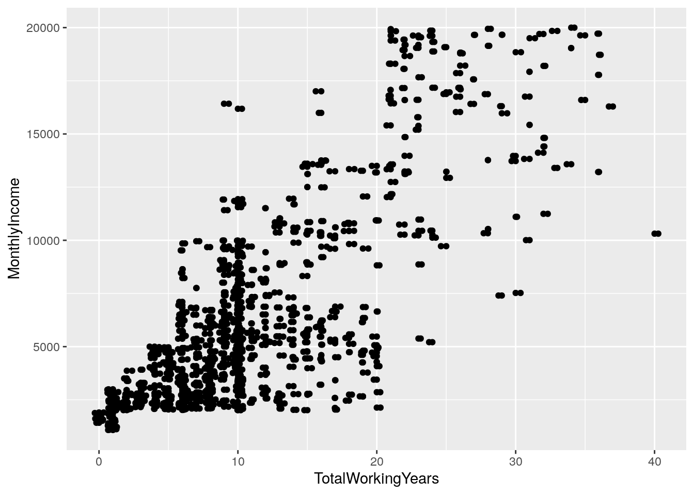
case_study_2 %>% ggplot(aes(x = JobLevel, y = MonthlyIncome,)) + geom_point() + geom_jitter()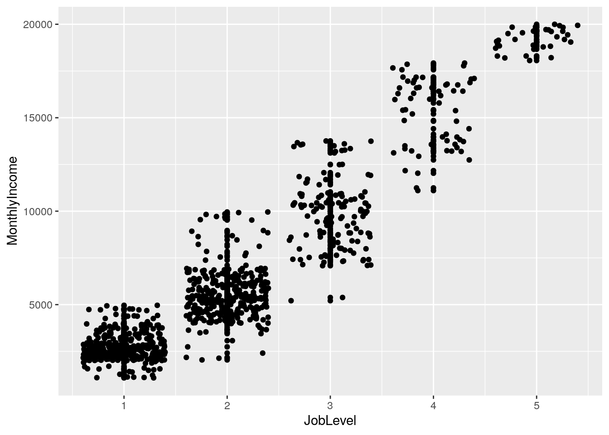
case_study_2 %>% ggplot(aes(x = JobRole, y = MonthlyIncome,)) + geom_boxplot() + theme(axis.text.x = element_text(angle = 90))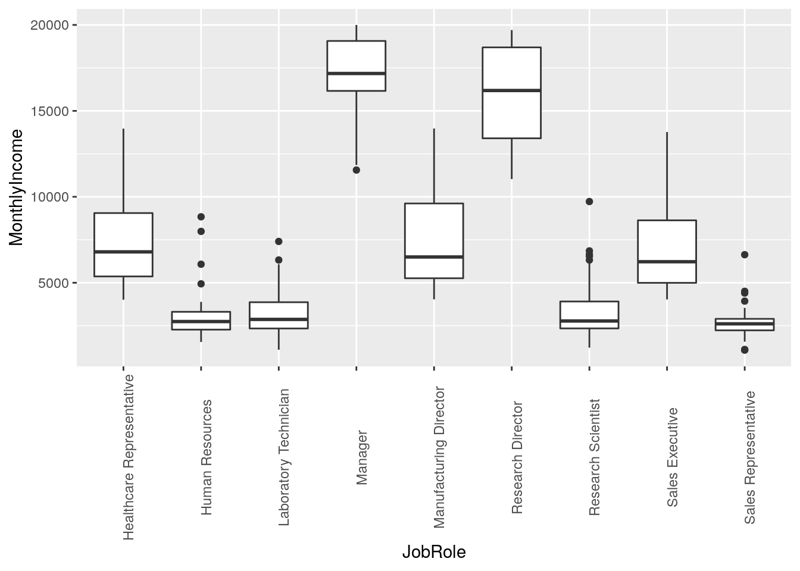
ggpairs(case_study_2[,c(20,16,17,30)])##
plot: [1,1] [=>-----------------------------------] 6% est: 0s
plot: [1,2] [====>--------------------------------] 12% est: 0s
plot: [1,3] [======>------------------------------] 19% est: 0s
plot: [1,4] [========>----------------------------] 25% est: 1s
plot: [2,1] [===========>-------------------------] 31% est: 1s
plot: [2,2] [=============>-----------------------] 38% est: 0s
plot: [2,3] [===============>---------------------] 44% est: 0s
plot: [2,4] [=================>-------------------] 50% est: 0s
plot: [3,1] [====================>----------------] 56% est: 0s `stat_bin()` using `bins = 30`. Pick better value with
## `binwidth`.
##
plot: [3,2] [======================>--------------] 62% est: 1s `stat_bin()` using `bins = 30`. Pick better value with
## `binwidth`.
##
plot: [3,3] [========================>------------] 69% est: 1s
plot: [3,4] [===========================>---------] 75% est: 0s
plot: [4,1] [=============================>-------] 81% est: 0s
plot: [4,2] [===============================>-----] 88% est: 0s
plot: [4,3] [==================================>--] 94% est: 0s `stat_bin()` using `bins = 30`. Pick better value with
## `binwidth`.
##
plot: [4,4] [=====================================]100% est: 0s
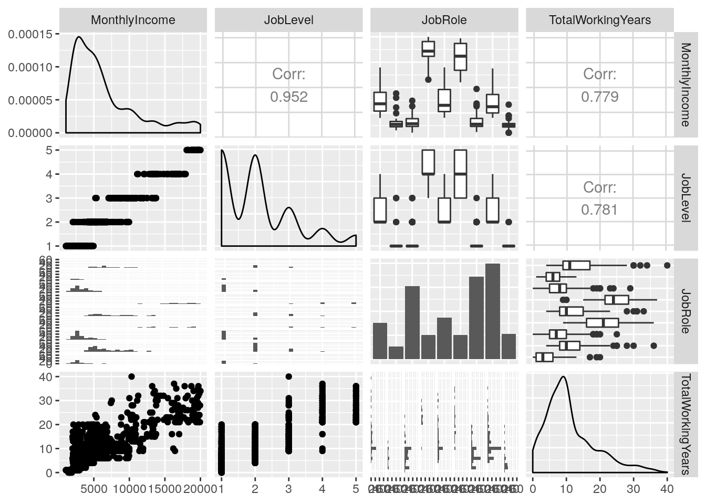
#Want to look at continous predictors as some levels look to be more like categorical rather than continous levels, and #still want to use as continous labels for NB and KNN classification
all_variables = case_study_2 %>% names()
# remove the response
response_ind = match(c('ID','Age','Attrition','EmployeeCount','EmployeeNumber','HourlyRate','DailyRate','MonthlyIncome','MonthlyRate','Over18','PerformanceRating', 'StandardHours'), all_variables)
all_pred_variables = all_variables[-response_ind]
# plot categorical variables
for (i in all_pred_variables) {
print(i)
CrossTable(case_study_2[, i], case_study_2[,"Attrition"],
prop.r = T,
prop.c = F,
prop.t = F,
prop.chisq = F,
dnn = c(i, "Attrition"))
}## [1] "BusinessTravel"
##
##
## Cell Contents
## |-------------------------|
## | N |
## | N / Row Total |
## |-------------------------|
##
##
## Total Observations in Table: 870
##
##
## | Attrition
## BusinessTravel | No | Yes | Row Total |
## ------------------|-----------|-----------|-----------|
## Non-Travel | 83 | 11 | 94 |
## | 0.883 | 0.117 | 0.108 |
## ------------------|-----------|-----------|-----------|
## Travel_Frequently | 123 | 35 | 158 |
## | 0.778 | 0.222 | 0.182 |
## ------------------|-----------|-----------|-----------|
## Travel_Rarely | 524 | 94 | 618 |
## | 0.848 | 0.152 | 0.710 |
## ------------------|-----------|-----------|-----------|
## Column Total | 730 | 140 | 870 |
## ------------------|-----------|-----------|-----------|
##
##
## [1] "Department"
##
##
## Cell Contents
## |-------------------------|
## | N |
## | N / Row Total |
## |-------------------------|
##
##
## Total Observations in Table: 870
##
##
## | Attrition
## Department | No | Yes | Row Total |
## -----------------------|-----------|-----------|-----------|
## Human Resources | 29 | 6 | 35 |
## | 0.829 | 0.171 | 0.040 |
## -----------------------|-----------|-----------|-----------|
## Research & Development | 487 | 75 | 562 |
## | 0.867 | 0.133 | 0.646 |
## -----------------------|-----------|-----------|-----------|
## Sales | 214 | 59 | 273 |
## | 0.784 | 0.216 | 0.314 |
## -----------------------|-----------|-----------|-----------|
## Column Total | 730 | 140 | 870 |
## -----------------------|-----------|-----------|-----------|
##
##
## [1] "DistanceFromHome"
##
##
## Cell Contents
## |-------------------------|
## | N |
## | N / Row Total |
## |-------------------------|
##
##
## Total Observations in Table: 870
##
##
## | Attrition
## DistanceFromHome | No | Yes | Row Total |
## -----------------|-----------|-----------|-----------|
## 1 | 95 | 17 | 112 |
## | 0.848 | 0.152 | 0.129 |
## -----------------|-----------|-----------|-----------|
## 2 | 116 | 17 | 133 |
## | 0.872 | 0.128 | 0.153 |
## -----------------|-----------|-----------|-----------|
## 3 | 37 | 8 | 45 |
## | 0.822 | 0.178 | 0.052 |
## -----------------|-----------|-----------|-----------|
## 4 | 39 | 5 | 44 |
## | 0.886 | 0.114 | 0.051 |
## -----------------|-----------|-----------|-----------|
## 5 | 28 | 5 | 33 |
## | 0.848 | 0.152 | 0.038 |
## -----------------|-----------|-----------|-----------|
## 6 | 33 | 4 | 37 |
## | 0.892 | 0.108 | 0.043 |
## -----------------|-----------|-----------|-----------|
## 7 | 44 | 6 | 50 |
## | 0.880 | 0.120 | 0.057 |
## -----------------|-----------|-----------|-----------|
## 8 | 44 | 4 | 48 |
## | 0.917 | 0.083 | 0.055 |
## -----------------|-----------|-----------|-----------|
## 9 | 39 | 11 | 50 |
## | 0.780 | 0.220 | 0.057 |
## -----------------|-----------|-----------|-----------|
## 10 | 43 | 5 | 48 |
## | 0.896 | 0.104 | 0.055 |
## -----------------|-----------|-----------|-----------|
## 11 | 14 | 2 | 16 |
## | 0.875 | 0.125 | 0.018 |
## -----------------|-----------|-----------|-----------|
## 12 | 9 | 2 | 11 |
## | 0.818 | 0.182 | 0.013 |
## -----------------|-----------|-----------|-----------|
## 13 | 7 | 4 | 11 |
## | 0.636 | 0.364 | 0.013 |
## -----------------|-----------|-----------|-----------|
## 14 | 11 | 4 | 15 |
## | 0.733 | 0.267 | 0.017 |
## -----------------|-----------|-----------|-----------|
## 15 | 11 | 2 | 13 |
## | 0.846 | 0.154 | 0.015 |
## -----------------|-----------|-----------|-----------|
## 16 | 16 | 4 | 20 |
## | 0.800 | 0.200 | 0.023 |
## -----------------|-----------|-----------|-----------|
## 17 | 12 | 2 | 14 |
## | 0.857 | 0.143 | 0.016 |
## -----------------|-----------|-----------|-----------|
## 18 | 14 | 2 | 16 |
## | 0.875 | 0.125 | 0.018 |
## -----------------|-----------|-----------|-----------|
## 19 | 12 | 3 | 15 |
## | 0.800 | 0.200 | 0.017 |
## -----------------|-----------|-----------|-----------|
## 20 | 9 | 3 | 12 |
## | 0.750 | 0.250 | 0.014 |
## -----------------|-----------|-----------|-----------|
## 21 | 12 | 2 | 14 |
## | 0.857 | 0.143 | 0.016 |
## -----------------|-----------|-----------|-----------|
## 22 | 7 | 5 | 12 |
## | 0.583 | 0.417 | 0.014 |
## -----------------|-----------|-----------|-----------|
## 23 | 11 | 3 | 14 |
## | 0.786 | 0.214 | 0.016 |
## -----------------|-----------|-----------|-----------|
## 24 | 11 | 11 | 22 |
## | 0.500 | 0.500 | 0.025 |
## -----------------|-----------|-----------|-----------|
## 25 | 14 | 2 | 16 |
## | 0.875 | 0.125 | 0.018 |
## -----------------|-----------|-----------|-----------|
## 26 | 13 | 1 | 14 |
## | 0.929 | 0.071 | 0.016 |
## -----------------|-----------|-----------|-----------|
## 27 | 7 | 1 | 8 |
## | 0.875 | 0.125 | 0.009 |
## -----------------|-----------|-----------|-----------|
## 28 | 12 | 1 | 13 |
## | 0.923 | 0.077 | 0.015 |
## -----------------|-----------|-----------|-----------|
## 29 | 10 | 4 | 14 |
## | 0.714 | 0.286 | 0.016 |
## -----------------|-----------|-----------|-----------|
## Column Total | 730 | 140 | 870 |
## -----------------|-----------|-----------|-----------|
##
##
## [1] "Education"
##
##
## Cell Contents
## |-------------------------|
## | N |
## | N / Row Total |
## |-------------------------|
##
##
## Total Observations in Table: 870
##
##
## | Attrition
## Education | No | Yes | Row Total |
## -------------|-----------|-----------|-----------|
## 1 | 80 | 18 | 98 |
## | 0.816 | 0.184 | 0.113 |
## -------------|-----------|-----------|-----------|
## 2 | 150 | 32 | 182 |
## | 0.824 | 0.176 | 0.209 |
## -------------|-----------|-----------|-----------|
## 3 | 269 | 55 | 324 |
## | 0.830 | 0.170 | 0.372 |
## -------------|-----------|-----------|-----------|
## 4 | 208 | 32 | 240 |
## | 0.867 | 0.133 | 0.276 |
## -------------|-----------|-----------|-----------|
## 5 | 23 | 3 | 26 |
## | 0.885 | 0.115 | 0.030 |
## -------------|-----------|-----------|-----------|
## Column Total | 730 | 140 | 870 |
## -------------|-----------|-----------|-----------|
##
##
## [1] "EducationField"
##
##
## Cell Contents
## |-------------------------|
## | N |
## | N / Row Total |
## |-------------------------|
##
##
## Total Observations in Table: 870
##
##
## | Attrition
## EducationField | No | Yes | Row Total |
## -----------------|-----------|-----------|-----------|
## Human Resources | 11 | 4 | 15 |
## | 0.733 | 0.267 | 0.017 |
## -----------------|-----------|-----------|-----------|
## Life Sciences | 305 | 53 | 358 |
## | 0.852 | 0.148 | 0.411 |
## -----------------|-----------|-----------|-----------|
## Marketing | 80 | 20 | 100 |
## | 0.800 | 0.200 | 0.115 |
## -----------------|-----------|-----------|-----------|
## Medical | 233 | 37 | 270 |
## | 0.863 | 0.137 | 0.310 |
## -----------------|-----------|-----------|-----------|
## Other | 43 | 9 | 52 |
## | 0.827 | 0.173 | 0.060 |
## -----------------|-----------|-----------|-----------|
## Technical Degree | 58 | 17 | 75 |
## | 0.773 | 0.227 | 0.086 |
## -----------------|-----------|-----------|-----------|
## Column Total | 730 | 140 | 870 |
## -----------------|-----------|-----------|-----------|
##
##
## [1] "EnvironmentSatisfaction"
##
##
## Cell Contents
## |-------------------------|
## | N |
## | N / Row Total |
## |-------------------------|
##
##
## Total Observations in Table: 870
##
##
## | Attrition
## EnvironmentSatisfaction | No | Yes | Row Total |
## ------------------------|-----------|-----------|-----------|
## 1 | 130 | 42 | 172 |
## | 0.756 | 0.244 | 0.198 |
## ------------------------|-----------|-----------|-----------|
## 2 | 154 | 24 | 178 |
## | 0.865 | 0.135 | 0.205 |
## ------------------------|-----------|-----------|-----------|
## 3 | 223 | 35 | 258 |
## | 0.864 | 0.136 | 0.297 |
## ------------------------|-----------|-----------|-----------|
## 4 | 223 | 39 | 262 |
## | 0.851 | 0.149 | 0.301 |
## ------------------------|-----------|-----------|-----------|
## Column Total | 730 | 140 | 870 |
## ------------------------|-----------|-----------|-----------|
##
##
## [1] "Gender"
##
##
## Cell Contents
## |-------------------------|
## | N |
## | N / Row Total |
## |-------------------------|
##
##
## Total Observations in Table: 870
##
##
## | Attrition
## Gender | No | Yes | Row Total |
## -------------|-----------|-----------|-----------|
## Female | 301 | 53 | 354 |
## | 0.850 | 0.150 | 0.407 |
## -------------|-----------|-----------|-----------|
## Male | 429 | 87 | 516 |
## | 0.831 | 0.169 | 0.593 |
## -------------|-----------|-----------|-----------|
## Column Total | 730 | 140 | 870 |
## -------------|-----------|-----------|-----------|
##
##
## [1] "JobInvolvement"
##
##
## Cell Contents
## |-------------------------|
## | N |
## | N / Row Total |
## |-------------------------|
##
##
## Total Observations in Table: 870
##
##
## | Attrition
## JobInvolvement | No | Yes | Row Total |
## ---------------|-----------|-----------|-----------|
## 1 | 25 | 22 | 47 |
## | 0.532 | 0.468 | 0.054 |
## ---------------|-----------|-----------|-----------|
## 2 | 184 | 44 | 228 |
## | 0.807 | 0.193 | 0.262 |
## ---------------|-----------|-----------|-----------|
## 3 | 447 | 67 | 514 |
## | 0.870 | 0.130 | 0.591 |
## ---------------|-----------|-----------|-----------|
## 4 | 74 | 7 | 81 |
## | 0.914 | 0.086 | 0.093 |
## ---------------|-----------|-----------|-----------|
## Column Total | 730 | 140 | 870 |
## ---------------|-----------|-----------|-----------|
##
##
## [1] "JobLevel"
##
##
## Cell Contents
## |-------------------------|
## | N |
## | N / Row Total |
## |-------------------------|
##
##
## Total Observations in Table: 870
##
##
## | Attrition
## JobLevel | No | Yes | Row Total |
## -------------|-----------|-----------|-----------|
## 1 | 243 | 86 | 329 |
## | 0.739 | 0.261 | 0.378 |
## -------------|-----------|-----------|-----------|
## 2 | 282 | 30 | 312 |
## | 0.904 | 0.096 | 0.359 |
## -------------|-----------|-----------|-----------|
## 3 | 115 | 17 | 132 |
## | 0.871 | 0.129 | 0.152 |
## -------------|-----------|-----------|-----------|
## 4 | 57 | 3 | 60 |
## | 0.950 | 0.050 | 0.069 |
## -------------|-----------|-----------|-----------|
## 5 | 33 | 4 | 37 |
## | 0.892 | 0.108 | 0.043 |
## -------------|-----------|-----------|-----------|
## Column Total | 730 | 140 | 870 |
## -------------|-----------|-----------|-----------|
##
##
## [1] "JobRole"
##
##
## Cell Contents
## |-------------------------|
## | N |
## | N / Row Total |
## |-------------------------|
##
##
## Total Observations in Table: 870
##
##
## | Attrition
## JobRole | No | Yes | Row Total |
## --------------------------|-----------|-----------|-----------|
## Healthcare Representative | 68 | 8 | 76 |
## | 0.895 | 0.105 | 0.087 |
## --------------------------|-----------|-----------|-----------|
## Human Resources | 21 | 6 | 27 |
## | 0.778 | 0.222 | 0.031 |
## --------------------------|-----------|-----------|-----------|
## Laboratory Technician | 123 | 30 | 153 |
## | 0.804 | 0.196 | 0.176 |
## --------------------------|-----------|-----------|-----------|
## Manager | 47 | 4 | 51 |
## | 0.922 | 0.078 | 0.059 |
## --------------------------|-----------|-----------|-----------|
## Manufacturing Director | 85 | 2 | 87 |
## | 0.977 | 0.023 | 0.100 |
## --------------------------|-----------|-----------|-----------|
## Research Director | 50 | 1 | 51 |
## | 0.980 | 0.020 | 0.059 |
## --------------------------|-----------|-----------|-----------|
## Research Scientist | 140 | 32 | 172 |
## | 0.814 | 0.186 | 0.198 |
## --------------------------|-----------|-----------|-----------|
## Sales Executive | 167 | 33 | 200 |
## | 0.835 | 0.165 | 0.230 |
## --------------------------|-----------|-----------|-----------|
## Sales Representative | 29 | 24 | 53 |
## | 0.547 | 0.453 | 0.061 |
## --------------------------|-----------|-----------|-----------|
## Column Total | 730 | 140 | 870 |
## --------------------------|-----------|-----------|-----------|
##
##
## [1] "JobSatisfaction"
##
##
## Cell Contents
## |-------------------------|
## | N |
## | N / Row Total |
## |-------------------------|
##
##
## Total Observations in Table: 870
##
##
## | Attrition
## JobSatisfaction | No | Yes | Row Total |
## ----------------|-----------|-----------|-----------|
## 1 | 141 | 38 | 179 |
## | 0.788 | 0.212 | 0.206 |
## ----------------|-----------|-----------|-----------|
## 2 | 135 | 31 | 166 |
## | 0.813 | 0.187 | 0.191 |
## ----------------|-----------|-----------|-----------|
## 3 | 211 | 43 | 254 |
## | 0.831 | 0.169 | 0.292 |
## ----------------|-----------|-----------|-----------|
## 4 | 243 | 28 | 271 |
## | 0.897 | 0.103 | 0.311 |
## ----------------|-----------|-----------|-----------|
## Column Total | 730 | 140 | 870 |
## ----------------|-----------|-----------|-----------|
##
##
## [1] "MaritalStatus"
##
##
## Cell Contents
## |-------------------------|
## | N |
## | N / Row Total |
## |-------------------------|
##
##
## Total Observations in Table: 870
##
##
## | Attrition
## MaritalStatus | No | Yes | Row Total |
## --------------|-----------|-----------|-----------|
## Divorced | 179 | 12 | 191 |
## | 0.937 | 0.063 | 0.220 |
## --------------|-----------|-----------|-----------|
## Married | 352 | 58 | 410 |
## | 0.859 | 0.141 | 0.471 |
## --------------|-----------|-----------|-----------|
## Single | 199 | 70 | 269 |
## | 0.740 | 0.260 | 0.309 |
## --------------|-----------|-----------|-----------|
## Column Total | 730 | 140 | 870 |
## --------------|-----------|-----------|-----------|
##
##
## [1] "NumCompaniesWorked"
##
##
## Cell Contents
## |-------------------------|
## | N |
## | N / Row Total |
## |-------------------------|
##
##
## Total Observations in Table: 870
##
##
## | Attrition
## NumCompaniesWorked | No | Yes | Row Total |
## -------------------|-----------|-----------|-----------|
## 0 | 100 | 11 | 111 |
## | 0.901 | 0.099 | 0.128 |
## -------------------|-----------|-----------|-----------|
## 1 | 260 | 60 | 320 |
## | 0.812 | 0.188 | 0.368 |
## -------------------|-----------|-----------|-----------|
## 2 | 65 | 9 | 74 |
## | 0.878 | 0.122 | 0.085 |
## -------------------|-----------|-----------|-----------|
## 3 | 82 | 9 | 91 |
## | 0.901 | 0.099 | 0.105 |
## -------------------|-----------|-----------|-----------|
## 4 | 78 | 7 | 85 |
## | 0.918 | 0.082 | 0.098 |
## -------------------|-----------|-----------|-----------|
## 5 | 32 | 11 | 43 |
## | 0.744 | 0.256 | 0.049 |
## -------------------|-----------|-----------|-----------|
## 6 | 30 | 9 | 39 |
## | 0.769 | 0.231 | 0.045 |
## -------------------|-----------|-----------|-----------|
## 7 | 35 | 11 | 46 |
## | 0.761 | 0.239 | 0.053 |
## -------------------|-----------|-----------|-----------|
## 8 | 23 | 5 | 28 |
## | 0.821 | 0.179 | 0.032 |
## -------------------|-----------|-----------|-----------|
## 9 | 25 | 8 | 33 |
## | 0.758 | 0.242 | 0.038 |
## -------------------|-----------|-----------|-----------|
## Column Total | 730 | 140 | 870 |
## -------------------|-----------|-----------|-----------|
##
##
## [1] "OverTime"
##
##
## Cell Contents
## |-------------------------|
## | N |
## | N / Row Total |
## |-------------------------|
##
##
## Total Observations in Table: 870
##
##
## | Attrition
## OverTime | No | Yes | Row Total |
## -------------|-----------|-----------|-----------|
## No | 558 | 60 | 618 |
## | 0.903 | 0.097 | 0.710 |
## -------------|-----------|-----------|-----------|
## Yes | 172 | 80 | 252 |
## | 0.683 | 0.317 | 0.290 |
## -------------|-----------|-----------|-----------|
## Column Total | 730 | 140 | 870 |
## -------------|-----------|-----------|-----------|
##
##
## [1] "PercentSalaryHike"
##
##
## Cell Contents
## |-------------------------|
## | N |
## | N / Row Total |
## |-------------------------|
##
##
## Total Observations in Table: 870
##
##
## | Attrition
## PercentSalaryHike | No | Yes | Row Total |
## ------------------|-----------|-----------|-----------|
## 11 | 102 | 24 | 126 |
## | 0.810 | 0.190 | 0.145 |
## ------------------|-----------|-----------|-----------|
## 12 | 102 | 17 | 119 |
## | 0.857 | 0.143 | 0.137 |
## ------------------|-----------|-----------|-----------|
## 13 | 102 | 21 | 123 |
## | 0.829 | 0.171 | 0.141 |
## ------------------|-----------|-----------|-----------|
## 14 | 107 | 13 | 120 |
## | 0.892 | 0.108 | 0.138 |
## ------------------|-----------|-----------|-----------|
## 15 | 46 | 8 | 54 |
## | 0.852 | 0.148 | 0.062 |
## ------------------|-----------|-----------|-----------|
## 16 | 33 | 10 | 43 |
## | 0.767 | 0.233 | 0.049 |
## ------------------|-----------|-----------|-----------|
## 17 | 46 | 10 | 56 |
## | 0.821 | 0.179 | 0.064 |
## ------------------|-----------|-----------|-----------|
## 18 | 48 | 9 | 57 |
## | 0.842 | 0.158 | 0.066 |
## ------------------|-----------|-----------|-----------|
## 19 | 35 | 5 | 40 |
## | 0.875 | 0.125 | 0.046 |
## ------------------|-----------|-----------|-----------|
## 20 | 24 | 3 | 27 |
## | 0.889 | 0.111 | 0.031 |
## ------------------|-----------|-----------|-----------|
## 21 | 31 | 2 | 33 |
## | 0.939 | 0.061 | 0.038 |
## ------------------|-----------|-----------|-----------|
## 22 | 23 | 7 | 30 |
## | 0.767 | 0.233 | 0.034 |
## ------------------|-----------|-----------|-----------|
## 23 | 12 | 5 | 17 |
## | 0.706 | 0.294 | 0.020 |
## ------------------|-----------|-----------|-----------|
## 24 | 9 | 5 | 14 |
## | 0.643 | 0.357 | 0.016 |
## ------------------|-----------|-----------|-----------|
## 25 | 10 | 1 | 11 |
## | 0.909 | 0.091 | 0.013 |
## ------------------|-----------|-----------|-----------|
## Column Total | 730 | 140 | 870 |
## ------------------|-----------|-----------|-----------|
##
##
## [1] "RelationshipSatisfaction"
##
##
## Cell Contents
## |-------------------------|
## | N |
## | N / Row Total |
## |-------------------------|
##
##
## Total Observations in Table: 870
##
##
## | Attrition
## RelationshipSatisfaction | No | Yes | Row Total |
## -------------------------|-----------|-----------|-----------|
## 1 | 139 | 35 | 174 |
## | 0.799 | 0.201 | 0.200 |
## -------------------------|-----------|-----------|-----------|
## 2 | 144 | 27 | 171 |
## | 0.842 | 0.158 | 0.197 |
## -------------------------|-----------|-----------|-----------|
## 3 | 225 | 36 | 261 |
## | 0.862 | 0.138 | 0.300 |
## -------------------------|-----------|-----------|-----------|
## 4 | 222 | 42 | 264 |
## | 0.841 | 0.159 | 0.303 |
## -------------------------|-----------|-----------|-----------|
## Column Total | 730 | 140 | 870 |
## -------------------------|-----------|-----------|-----------|
##
##
## [1] "StockOptionLevel"
##
##
## Cell Contents
## |-------------------------|
## | N |
## | N / Row Total |
## |-------------------------|
##
##
## Total Observations in Table: 870
##
##
## | Attrition
## StockOptionLevel | No | Yes | Row Total |
## -----------------|-----------|-----------|-----------|
## 0 | 281 | 98 | 379 |
## | 0.741 | 0.259 | 0.436 |
## -----------------|-----------|-----------|-----------|
## 1 | 328 | 27 | 355 |
## | 0.924 | 0.076 | 0.408 |
## -----------------|-----------|-----------|-----------|
## 2 | 78 | 3 | 81 |
## | 0.963 | 0.037 | 0.093 |
## -----------------|-----------|-----------|-----------|
## 3 | 43 | 12 | 55 |
## | 0.782 | 0.218 | 0.063 |
## -----------------|-----------|-----------|-----------|
## Column Total | 730 | 140 | 870 |
## -----------------|-----------|-----------|-----------|
##
##
## [1] "TotalWorkingYears"
##
##
## Cell Contents
## |-------------------------|
## | N |
## | N / Row Total |
## |-------------------------|
##
##
## Total Observations in Table: 870
##
##
## | Attrition
## TotalWorkingYears | No | Yes | Row Total |
## ------------------|-----------|-----------|-----------|
## 0 | 2 | 5 | 7 |
## | 0.286 | 0.714 | 0.008 |
## ------------------|-----------|-----------|-----------|
## 1 | 28 | 20 | 48 |
## | 0.583 | 0.417 | 0.055 |
## ------------------|-----------|-----------|-----------|
## 2 | 13 | 7 | 20 |
## | 0.650 | 0.350 | 0.023 |
## ------------------|-----------|-----------|-----------|
## 3 | 20 | 7 | 27 |
## | 0.741 | 0.259 | 0.031 |
## ------------------|-----------|-----------|-----------|
## 4 | 28 | 7 | 35 |
## | 0.800 | 0.200 | 0.040 |
## ------------------|-----------|-----------|-----------|
## 5 | 38 | 11 | 49 |
## | 0.776 | 0.224 | 0.056 |
## ------------------|-----------|-----------|-----------|
## 6 | 59 | 13 | 72 |
## | 0.819 | 0.181 | 0.083 |
## ------------------|-----------|-----------|-----------|
## 7 | 38 | 9 | 47 |
## | 0.809 | 0.191 | 0.054 |
## ------------------|-----------|-----------|-----------|
## 8 | 53 | 8 | 61 |
## | 0.869 | 0.131 | 0.070 |
## ------------------|-----------|-----------|-----------|
## 9 | 53 | 5 | 58 |
## | 0.914 | 0.086 | 0.067 |
## ------------------|-----------|-----------|-----------|
## 10 | 117 | 15 | 132 |
## | 0.886 | 0.114 | 0.152 |
## ------------------|-----------|-----------|-----------|
## 11 | 17 | 3 | 20 |
## | 0.850 | 0.150 | 0.023 |
## ------------------|-----------|-----------|-----------|
## 12 | 21 | 2 | 23 |
## | 0.913 | 0.087 | 0.026 |
## ------------------|-----------|-----------|-----------|
## 13 | 22 | 3 | 25 |
## | 0.880 | 0.120 | 0.029 |
## ------------------|-----------|-----------|-----------|
## 14 | 19 | 3 | 22 |
## | 0.864 | 0.136 | 0.025 |
## ------------------|-----------|-----------|-----------|
## 15 | 26 | 3 | 29 |
## | 0.897 | 0.103 | 0.033 |
## ------------------|-----------|-----------|-----------|
## 16 | 21 | 3 | 24 |
## | 0.875 | 0.125 | 0.028 |
## ------------------|-----------|-----------|-----------|
## 17 | 15 | 2 | 17 |
## | 0.882 | 0.118 | 0.020 |
## ------------------|-----------|-----------|-----------|
## 18 | 11 | 2 | 13 |
## | 0.846 | 0.154 | 0.015 |
## ------------------|-----------|-----------|-----------|
## 19 | 12 | 1 | 13 |
## | 0.923 | 0.077 | 0.015 |
## ------------------|-----------|-----------|-----------|
## 20 | 16 | 1 | 17 |
## | 0.941 | 0.059 | 0.020 |
## ------------------|-----------|-----------|-----------|
## 21 | 16 | 1 | 17 |
## | 0.941 | 0.059 | 0.020 |
## ------------------|-----------|-----------|-----------|
## 22 | 13 | 1 | 14 |
## | 0.929 | 0.071 | 0.016 |
## ------------------|-----------|-----------|-----------|
## 23 | 12 | 2 | 14 |
## | 0.857 | 0.143 | 0.016 |
## ------------------|-----------|-----------|-----------|
## 24 | 8 | 1 | 9 |
## | 0.889 | 0.111 | 0.010 |
## ------------------|-----------|-----------|-----------|
## 25 | 5 | 1 | 6 |
## | 0.833 | 0.167 | 0.007 |
## ------------------|-----------|-----------|-----------|
## 26 | 7 | 1 | 8 |
## | 0.875 | 0.125 | 0.009 |
## ------------------|-----------|-----------|-----------|
## 27 | 3 | 0 | 3 |
## | 1.000 | 0.000 | 0.003 |
## ------------------|-----------|-----------|-----------|
## 28 | 6 | 0 | 6 |
## | 1.000 | 0.000 | 0.007 |
## ------------------|-----------|-----------|-----------|
## 29 | 4 | 0 | 4 |
## | 1.000 | 0.000 | 0.005 |
## ------------------|-----------|-----------|-----------|
## 30 | 5 | 0 | 5 |
## | 1.000 | 0.000 | 0.006 |
## ------------------|-----------|-----------|-----------|
## 31 | 5 | 1 | 6 |
## | 0.833 | 0.167 | 0.007 |
## ------------------|-----------|-----------|-----------|
## 32 | 6 | 0 | 6 |
## | 1.000 | 0.000 | 0.007 |
## ------------------|-----------|-----------|-----------|
## 33 | 1 | 1 | 2 |
## | 0.500 | 0.500 | 0.002 |
## ------------------|-----------|-----------|-----------|
## 34 | 3 | 0 | 3 |
## | 1.000 | 0.000 | 0.003 |
## ------------------|-----------|-----------|-----------|
## 35 | 2 | 0 | 2 |
## | 1.000 | 0.000 | 0.002 |
## ------------------|-----------|-----------|-----------|
## 36 | 4 | 0 | 4 |
## | 1.000 | 0.000 | 0.005 |
## ------------------|-----------|-----------|-----------|
## 37 | 1 | 0 | 1 |
## | 1.000 | 0.000 | 0.001 |
## ------------------|-----------|-----------|-----------|
## 40 | 0 | 1 | 1 |
## | 0.000 | 1.000 | 0.001 |
## ------------------|-----------|-----------|-----------|
## Column Total | 730 | 140 | 870 |
## ------------------|-----------|-----------|-----------|
##
##
## [1] "TrainingTimesLastYear"
##
##
## Cell Contents
## |-------------------------|
## | N |
## | N / Row Total |
## |-------------------------|
##
##
## Total Observations in Table: 870
##
##
## | Attrition
## TrainingTimesLastYear | No | Yes | Row Total |
## ----------------------|-----------|-----------|-----------|
## 0 | 22 | 8 | 30 |
## | 0.733 | 0.267 | 0.034 |
## ----------------------|-----------|-----------|-----------|
## 1 | 34 | 5 | 39 |
## | 0.872 | 0.128 | 0.045 |
## ----------------------|-----------|-----------|-----------|
## 2 | 252 | 57 | 309 |
## | 0.816 | 0.184 | 0.355 |
## ----------------------|-----------|-----------|-----------|
## 3 | 265 | 43 | 308 |
## | 0.860 | 0.140 | 0.354 |
## ----------------------|-----------|-----------|-----------|
## 4 | 57 | 16 | 73 |
## | 0.781 | 0.219 | 0.084 |
## ----------------------|-----------|-----------|-----------|
## 5 | 68 | 7 | 75 |
## | 0.907 | 0.093 | 0.086 |
## ----------------------|-----------|-----------|-----------|
## 6 | 32 | 4 | 36 |
## | 0.889 | 0.111 | 0.041 |
## ----------------------|-----------|-----------|-----------|
## Column Total | 730 | 140 | 870 |
## ----------------------|-----------|-----------|-----------|
##
##
## [1] "WorkLifeBalance"
##
##
## Cell Contents
## |-------------------------|
## | N |
## | N / Row Total |
## |-------------------------|
##
##
## Total Observations in Table: 870
##
##
## | Attrition
## WorkLifeBalance | No | Yes | Row Total |
## ----------------|-----------|-----------|-----------|
## 1 | 31 | 17 | 48 |
## | 0.646 | 0.354 | 0.055 |
## ----------------|-----------|-----------|-----------|
## 2 | 162 | 30 | 192 |
## | 0.844 | 0.156 | 0.221 |
## ----------------|-----------|-----------|-----------|
## 3 | 452 | 80 | 532 |
## | 0.850 | 0.150 | 0.611 |
## ----------------|-----------|-----------|-----------|
## 4 | 85 | 13 | 98 |
## | 0.867 | 0.133 | 0.113 |
## ----------------|-----------|-----------|-----------|
## Column Total | 730 | 140 | 870 |
## ----------------|-----------|-----------|-----------|
##
##
## [1] "YearsAtCompany"
##
##
## Cell Contents
## |-------------------------|
## | N |
## | N / Row Total |
## |-------------------------|
##
##
## Total Observations in Table: 870
##
##
## | Attrition
## YearsAtCompany | No | Yes | Row Total |
## ---------------|-----------|-----------|-----------|
## 0 | 17 | 11 | 28 |
## | 0.607 | 0.393 | 0.032 |
## ---------------|-----------|-----------|-----------|
## 1 | 72 | 35 | 107 |
## | 0.673 | 0.327 | 0.123 |
## ---------------|-----------|-----------|-----------|
## 2 | 58 | 19 | 77 |
## | 0.753 | 0.247 | 0.089 |
## ---------------|-----------|-----------|-----------|
## 3 | 75 | 10 | 85 |
## | 0.882 | 0.118 | 0.098 |
## ---------------|-----------|-----------|-----------|
## 4 | 44 | 10 | 54 |
## | 0.815 | 0.185 | 0.062 |
## ---------------|-----------|-----------|-----------|
## 5 | 93 | 12 | 105 |
## | 0.886 | 0.114 | 0.121 |
## ---------------|-----------|-----------|-----------|
## 6 | 41 | 3 | 44 |
## | 0.932 | 0.068 | 0.051 |
## ---------------|-----------|-----------|-----------|
## 7 | 38 | 4 | 42 |
## | 0.905 | 0.095 | 0.048 |
## ---------------|-----------|-----------|-----------|
## 8 | 45 | 5 | 50 |
## | 0.900 | 0.100 | 0.057 |
## ---------------|-----------|-----------|-----------|
## 9 | 47 | 5 | 52 |
## | 0.904 | 0.096 | 0.060 |
## ---------------|-----------|-----------|-----------|
## 10 | 66 | 11 | 77 |
## | 0.857 | 0.143 | 0.089 |
## ---------------|-----------|-----------|-----------|
## 11 | 15 | 2 | 17 |
## | 0.882 | 0.118 | 0.020 |
## ---------------|-----------|-----------|-----------|
## 12 | 9 | 0 | 9 |
## | 1.000 | 0.000 | 0.010 |
## ---------------|-----------|-----------|-----------|
## 13 | 18 | 2 | 20 |
## | 0.900 | 0.100 | 0.023 |
## ---------------|-----------|-----------|-----------|
## 14 | 12 | 2 | 14 |
## | 0.857 | 0.143 | 0.016 |
## ---------------|-----------|-----------|-----------|
## 15 | 10 | 1 | 11 |
## | 0.909 | 0.091 | 0.013 |
## ---------------|-----------|-----------|-----------|
## 16 | 5 | 1 | 6 |
## | 0.833 | 0.167 | 0.007 |
## ---------------|-----------|-----------|-----------|
## 17 | 4 | 1 | 5 |
## | 0.800 | 0.200 | 0.006 |
## ---------------|-----------|-----------|-----------|
## 18 | 7 | 1 | 8 |
## | 0.875 | 0.125 | 0.009 |
## ---------------|-----------|-----------|-----------|
## 19 | 8 | 0 | 8 |
## | 1.000 | 0.000 | 0.009 |
## ---------------|-----------|-----------|-----------|
## 20 | 14 | 0 | 14 |
## | 1.000 | 0.000 | 0.016 |
## ---------------|-----------|-----------|-----------|
## 21 | 6 | 0 | 6 |
## | 1.000 | 0.000 | 0.007 |
## ---------------|-----------|-----------|-----------|
## 22 | 11 | 1 | 12 |
## | 0.917 | 0.083 | 0.014 |
## ---------------|-----------|-----------|-----------|
## 23 | 0 | 1 | 1 |
## | 0.000 | 1.000 | 0.001 |
## ---------------|-----------|-----------|-----------|
## 24 | 3 | 1 | 4 |
## | 0.750 | 0.250 | 0.005 |
## ---------------|-----------|-----------|-----------|
## 25 | 2 | 0 | 2 |
## | 1.000 | 0.000 | 0.002 |
## ---------------|-----------|-----------|-----------|
## 26 | 3 | 0 | 3 |
## | 1.000 | 0.000 | 0.003 |
## ---------------|-----------|-----------|-----------|
## 30 | 1 | 0 | 1 |
## | 1.000 | 0.000 | 0.001 |
## ---------------|-----------|-----------|-----------|
## 31 | 2 | 0 | 2 |
## | 1.000 | 0.000 | 0.002 |
## ---------------|-----------|-----------|-----------|
## 32 | 2 | 1 | 3 |
## | 0.667 | 0.333 | 0.003 |
## ---------------|-----------|-----------|-----------|
## 33 | 2 | 0 | 2 |
## | 1.000 | 0.000 | 0.002 |
## ---------------|-----------|-----------|-----------|
## 40 | 0 | 1 | 1 |
## | 0.000 | 1.000 | 0.001 |
## ---------------|-----------|-----------|-----------|
## Column Total | 730 | 140 | 870 |
## ---------------|-----------|-----------|-----------|
##
##
## [1] "YearsInCurrentRole"
##
##
## Cell Contents
## |-------------------------|
## | N |
## | N / Row Total |
## |-------------------------|
##
##
## Total Observations in Table: 870
##
##
## | Attrition
## YearsInCurrentRole | No | Yes | Row Total |
## -------------------|-----------|-----------|-----------|
## 0 | 105 | 46 | 151 |
## | 0.695 | 0.305 | 0.174 |
## -------------------|-----------|-----------|-----------|
## 1 | 32 | 6 | 38 |
## | 0.842 | 0.158 | 0.044 |
## -------------------|-----------|-----------|-----------|
## 2 | 182 | 41 | 223 |
## | 0.816 | 0.184 | 0.256 |
## -------------------|-----------|-----------|-----------|
## 3 | 60 | 8 | 68 |
## | 0.882 | 0.118 | 0.078 |
## -------------------|-----------|-----------|-----------|
## 4 | 47 | 6 | 53 |
## | 0.887 | 0.113 | 0.061 |
## -------------------|-----------|-----------|-----------|
## 5 | 25 | 1 | 26 |
## | 0.962 | 0.038 | 0.030 |
## -------------------|-----------|-----------|-----------|
## 6 | 17 | 0 | 17 |
## | 1.000 | 0.000 | 0.020 |
## -------------------|-----------|-----------|-----------|
## 7 | 117 | 19 | 136 |
## | 0.860 | 0.140 | 0.156 |
## -------------------|-----------|-----------|-----------|
## 8 | 52 | 4 | 56 |
## | 0.929 | 0.071 | 0.064 |
## -------------------|-----------|-----------|-----------|
## 9 | 37 | 3 | 40 |
## | 0.925 | 0.075 | 0.046 |
## -------------------|-----------|-----------|-----------|
## 10 | 12 | 2 | 14 |
## | 0.857 | 0.143 | 0.016 |
## -------------------|-----------|-----------|-----------|
## 11 | 15 | 0 | 15 |
## | 1.000 | 0.000 | 0.017 |
## -------------------|-----------|-----------|-----------|
## 12 | 6 | 1 | 7 |
## | 0.857 | 0.143 | 0.008 |
## -------------------|-----------|-----------|-----------|
## 13 | 8 | 1 | 9 |
## | 0.889 | 0.111 | 0.010 |
## -------------------|-----------|-----------|-----------|
## 14 | 6 | 1 | 7 |
## | 0.857 | 0.143 | 0.008 |
## -------------------|-----------|-----------|-----------|
## 15 | 2 | 1 | 3 |
## | 0.667 | 0.333 | 0.003 |
## -------------------|-----------|-----------|-----------|
## 16 | 3 | 0 | 3 |
## | 1.000 | 0.000 | 0.003 |
## -------------------|-----------|-----------|-----------|
## 17 | 3 | 0 | 3 |
## | 1.000 | 0.000 | 0.003 |
## -------------------|-----------|-----------|-----------|
## 18 | 1 | 0 | 1 |
## | 1.000 | 0.000 | 0.001 |
## -------------------|-----------|-----------|-----------|
## Column Total | 730 | 140 | 870 |
## -------------------|-----------|-----------|-----------|
##
##
## [1] "YearsSinceLastPromotion"
##
##
## Cell Contents
## |-------------------------|
## | N |
## | N / Row Total |
## |-------------------------|
##
##
## Total Observations in Table: 870
##
##
## | Attrition
## YearsSinceLastPromotion | No | Yes | Row Total |
## ------------------------|-----------|-----------|-----------|
## 0 | 279 | 63 | 342 |
## | 0.816 | 0.184 | 0.393 |
## ------------------------|-----------|-----------|-----------|
## 1 | 188 | 26 | 214 |
## | 0.879 | 0.121 | 0.246 |
## ------------------------|-----------|-----------|-----------|
## 2 | 75 | 19 | 94 |
## | 0.798 | 0.202 | 0.108 |
## ------------------------|-----------|-----------|-----------|
## 3 | 26 | 6 | 32 |
## | 0.812 | 0.188 | 0.037 |
## ------------------------|-----------|-----------|-----------|
## 4 | 30 | 2 | 32 |
## | 0.938 | 0.062 | 0.037 |
## ------------------------|-----------|-----------|-----------|
## 5 | 29 | 1 | 30 |
## | 0.967 | 0.033 | 0.034 |
## ------------------------|-----------|-----------|-----------|
## 6 | 18 | 5 | 23 |
## | 0.783 | 0.217 | 0.026 |
## ------------------------|-----------|-----------|-----------|
## 7 | 33 | 8 | 41 |
## | 0.805 | 0.195 | 0.047 |
## ------------------------|-----------|-----------|-----------|
## 8 | 12 | 0 | 12 |
## | 1.000 | 0.000 | 0.014 |
## ------------------------|-----------|-----------|-----------|
## 9 | 6 | 3 | 9 |
## | 0.667 | 0.333 | 0.010 |
## ------------------------|-----------|-----------|-----------|
## 10 | 3 | 1 | 4 |
## | 0.750 | 0.250 | 0.005 |
## ------------------------|-----------|-----------|-----------|
## 11 | 12 | 2 | 14 |
## | 0.857 | 0.143 | 0.016 |
## ------------------------|-----------|-----------|-----------|
## 12 | 5 | 0 | 5 |
## | 1.000 | 0.000 | 0.006 |
## ------------------------|-----------|-----------|-----------|
## 13 | 5 | 0 | 5 |
## | 1.000 | 0.000 | 0.006 |
## ------------------------|-----------|-----------|-----------|
## 14 | 4 | 1 | 5 |
## | 0.800 | 0.200 | 0.006 |
## ------------------------|-----------|-----------|-----------|
## 15 | 5 | 3 | 8 |
## | 0.625 | 0.375 | 0.009 |
## ------------------------|-----------|-----------|-----------|
## Column Total | 730 | 140 | 870 |
## ------------------------|-----------|-----------|-----------|
##
##
## [1] "YearsWithCurrManager"
##
##
## Cell Contents
## |-------------------------|
## | N |
## | N / Row Total |
## |-------------------------|
##
##
## Total Observations in Table: 870
##
##
## | Attrition
## YearsWithCurrManager | No | Yes | Row Total |
## ---------------------|-----------|-----------|-----------|
## 0 | 114 | 52 | 166 |
## | 0.687 | 0.313 | 0.191 |
## ---------------------|-----------|-----------|-----------|
## 1 | 35 | 5 | 40 |
## | 0.875 | 0.125 | 0.046 |
## ---------------------|-----------|-----------|-----------|
## 2 | 174 | 28 | 202 |
## | 0.861 | 0.139 | 0.232 |
## ---------------------|-----------|-----------|-----------|
## 3 | 66 | 10 | 76 |
## | 0.868 | 0.132 | 0.087 |
## ---------------------|-----------|-----------|-----------|
## 4 | 45 | 6 | 51 |
## | 0.882 | 0.118 | 0.059 |
## ---------------------|-----------|-----------|-----------|
## 5 | 19 | 3 | 22 |
## | 0.864 | 0.136 | 0.025 |
## ---------------------|-----------|-----------|-----------|
## 6 | 10 | 2 | 12 |
## | 0.833 | 0.167 | 0.014 |
## ---------------------|-----------|-----------|-----------|
## 7 | 110 | 21 | 131 |
## | 0.840 | 0.160 | 0.151 |
## ---------------------|-----------|-----------|-----------|
## 8 | 64 | 4 | 68 |
## | 0.941 | 0.059 | 0.078 |
## ---------------------|-----------|-----------|-----------|
## 9 | 40 | 4 | 44 |
## | 0.909 | 0.091 | 0.051 |
## ---------------------|-----------|-----------|-----------|
## 10 | 15 | 3 | 18 |
## | 0.833 | 0.167 | 0.021 |
## ---------------------|-----------|-----------|-----------|
## 11 | 10 | 1 | 11 |
## | 0.909 | 0.091 | 0.013 |
## ---------------------|-----------|-----------|-----------|
## 12 | 13 | 0 | 13 |
## | 1.000 | 0.000 | 0.015 |
## ---------------------|-----------|-----------|-----------|
## 13 | 7 | 0 | 7 |
## | 1.000 | 0.000 | 0.008 |
## ---------------------|-----------|-----------|-----------|
## 14 | 3 | 1 | 4 |
## | 0.750 | 0.250 | 0.005 |
## ---------------------|-----------|-----------|-----------|
## 15 | 1 | 0 | 1 |
## | 1.000 | 0.000 | 0.001 |
## ---------------------|-----------|-----------|-----------|
## 17 | 4 | 0 | 4 |
## | 1.000 | 0.000 | 0.005 |
## ---------------------|-----------|-----------|-----------|
## Column Total | 730 | 140 | 870 |
## ---------------------|-----------|-----------|-----------|
##
## case_study_2 %>%
ggplot() +
geom_mosaic(aes(x = product(Attrition, YearsAtCompany), fill = Attrition)) +
theme(axis.text.x = element_text(angle = 90,
hjust = 1,
vjust = 0.5),
axis.text.y = element_blank(),
axis.ticks.y = element_blank()) +
xlab("Years At Company ") +
ylab("Attrition")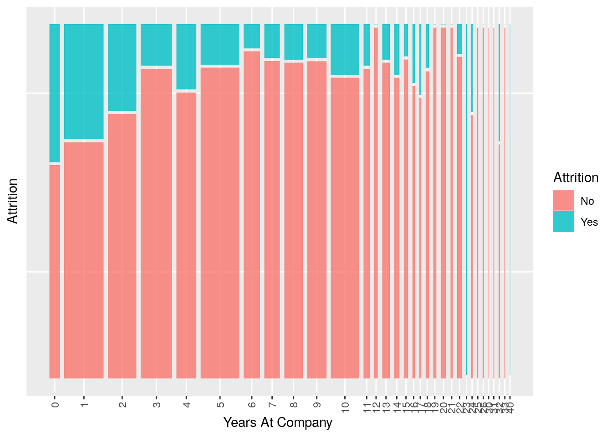
case_study_2 %>%
ggplot() +
geom_mosaic(aes(x = product(Attrition,BusinessTravel), fill = Attrition)) +
theme(axis.text.x = element_text(angle = 90,
hjust = 1,
vjust = 0.5),
axis.text.y = element_blank(),
axis.ticks.y = element_blank()) +
xlab("BusinessTravel") +
ylab("Attrition")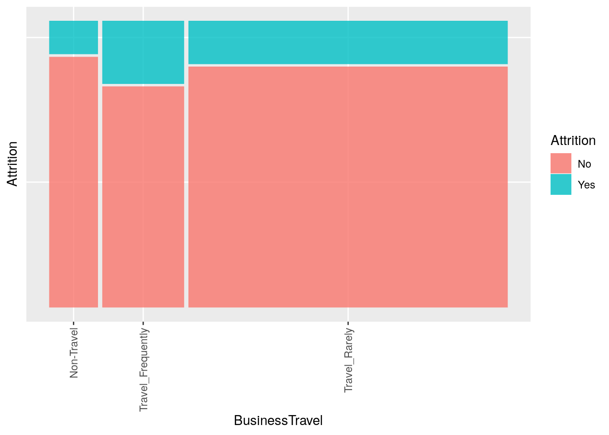
case_study_2 %>%
ggplot() +
geom_mosaic(aes(x = product(Attrition,Education), fill = Attrition)) +
theme(axis.text.x = element_text(angle = 90,
hjust = 1,
vjust = 0.5),
axis.text.y = element_blank(),
axis.ticks.y = element_blank()) +
xlab("Education") +
ylab("Attrition")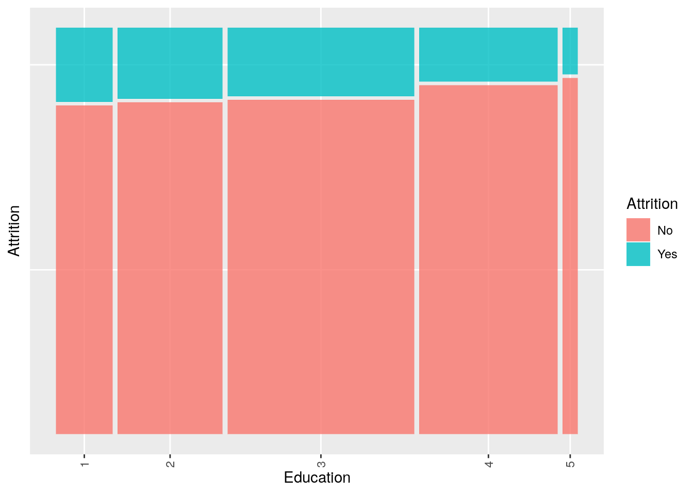
case_study_2 %>%
ggplot() +
geom_mosaic(aes(x = product(Attrition,JobLevel), fill = Attrition)) +
theme(axis.text.x = element_text(angle = 90,
hjust = 1,
vjust = 0.5),
axis.text.y = element_blank(),
axis.ticks.y = element_blank()) +
xlab("Job Level") +
ylab("Attrition")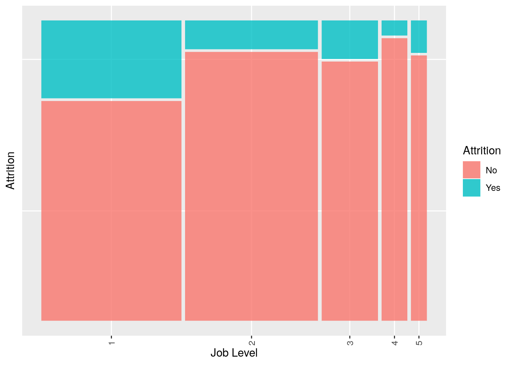
case_study_2 %>%
ggplot() +
geom_mosaic(aes(x = product(Attrition,JobSatisfaction), fill = Attrition)) +
theme(axis.text.x = element_text(angle = 90,
hjust = 1,
vjust = 0.5),
axis.text.y = element_blank(),
axis.ticks.y = element_blank()) +
xlab("Job Satisfaction") +
ylab("Attrition")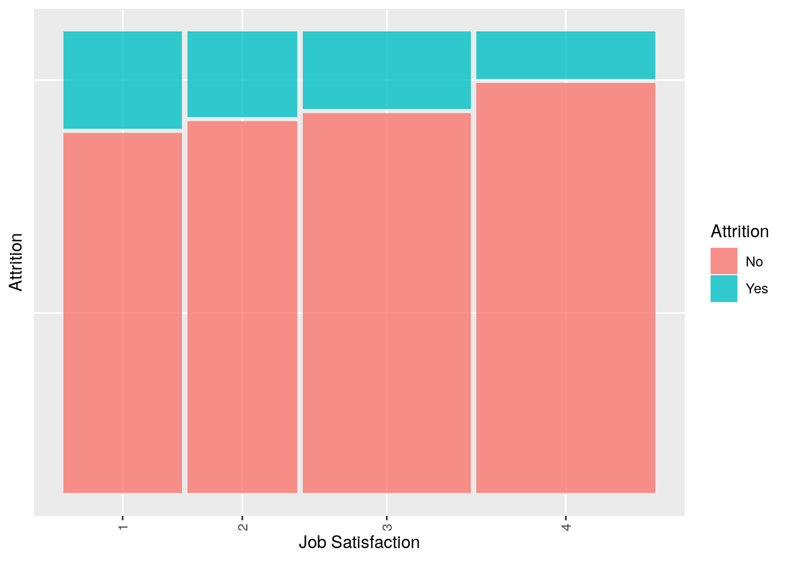
case_study_2 %>%
ggplot() +
geom_mosaic(aes(x = product(Attrition,JobInvolvement), fill = Attrition)) +
theme(axis.text.x = element_text(angle = 90,
hjust = 1,
vjust = 0.5),
axis.text.y = element_blank(),
axis.ticks.y = element_blank()) +
xlab("Job Involvement") +
ylab("Attrition")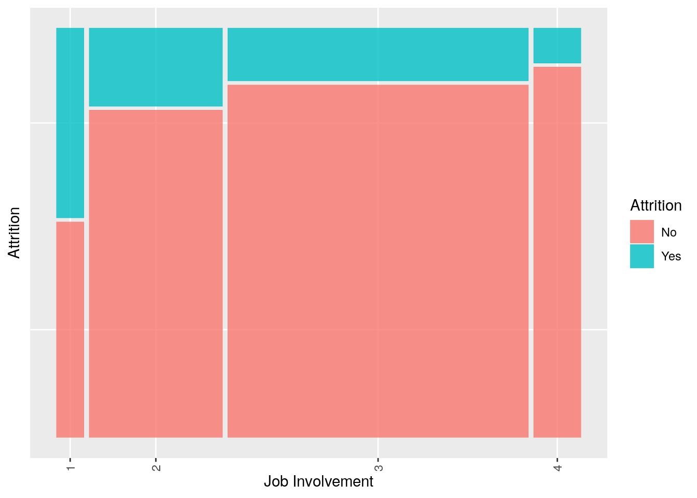
case_study_2 %>%
ggplot() +
geom_mosaic(aes(x = product(Attrition,EnvironmentSatisfaction), fill = Attrition)) +
theme(axis.text.x = element_text(angle = 90,
hjust = 1,
vjust = 0.5),
axis.text.y = element_blank(),
axis.ticks.y = element_blank()) +
xlab("Environment") +
ylab("Attrition")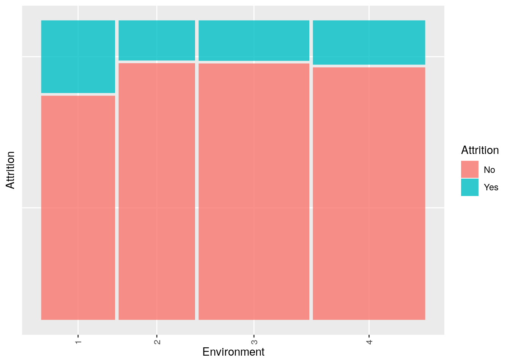
case_study_2 %>%
ggplot() +
geom_mosaic(aes(x = product(Attrition,Department), fill = Attrition)) +
theme(axis.text.x = element_text(angle = 90,
hjust = 1,
vjust = 0.5),
axis.text.y = element_blank(),
axis.ticks.y = element_blank()) +
xlab("Department") +
ylab("Attrition")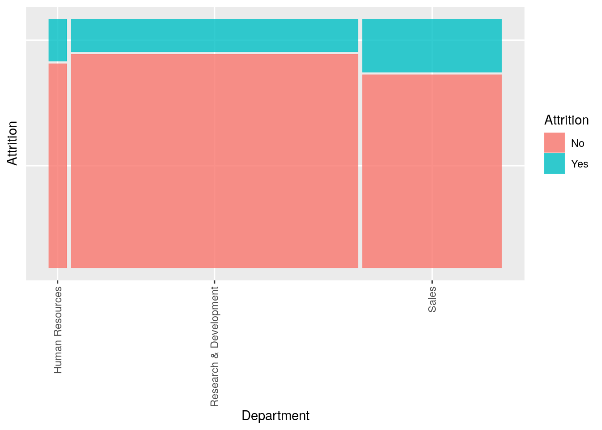
case_study_2 %>%
ggplot() +
geom_mosaic(aes(x = product(Attrition,EducationField), fill = Attrition)) +
theme(axis.text.x = element_text(angle = 90,
hjust = 1,
vjust = 0.5),
axis.text.y = element_blank(),
axis.ticks.y = element_blank()) +
xlab("Education Field") +
ylab("Attrition")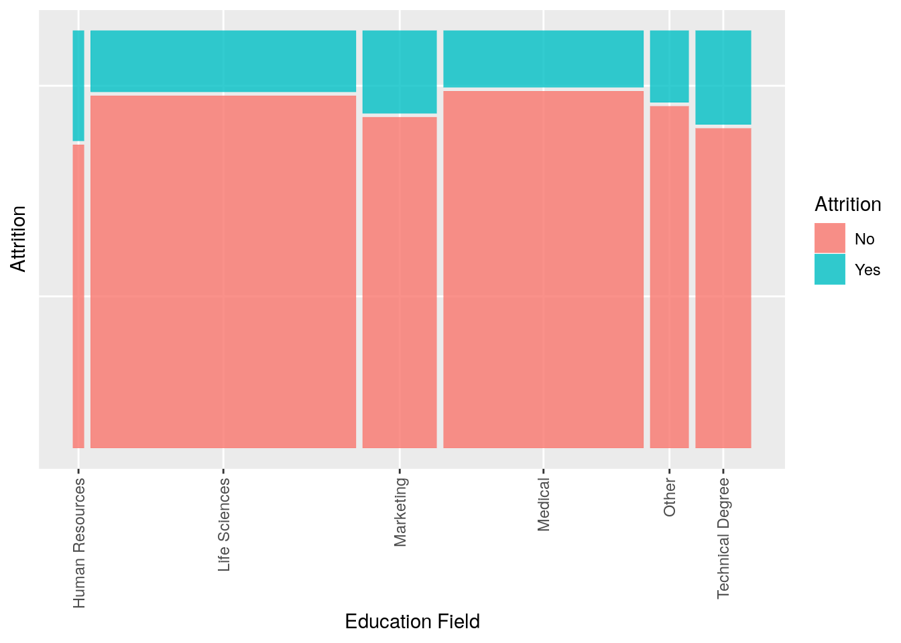
case_study_2 %>%
ggplot() +
geom_mosaic(aes(x = product(Attrition,Gender), fill = Attrition)) +
theme(axis.text.x = element_text(angle = 90,
hjust = 1,
vjust = 0.5),
axis.text.y = element_blank(),
axis.ticks.y = element_blank()) +
xlab("Gender") +
ylab("Attrition")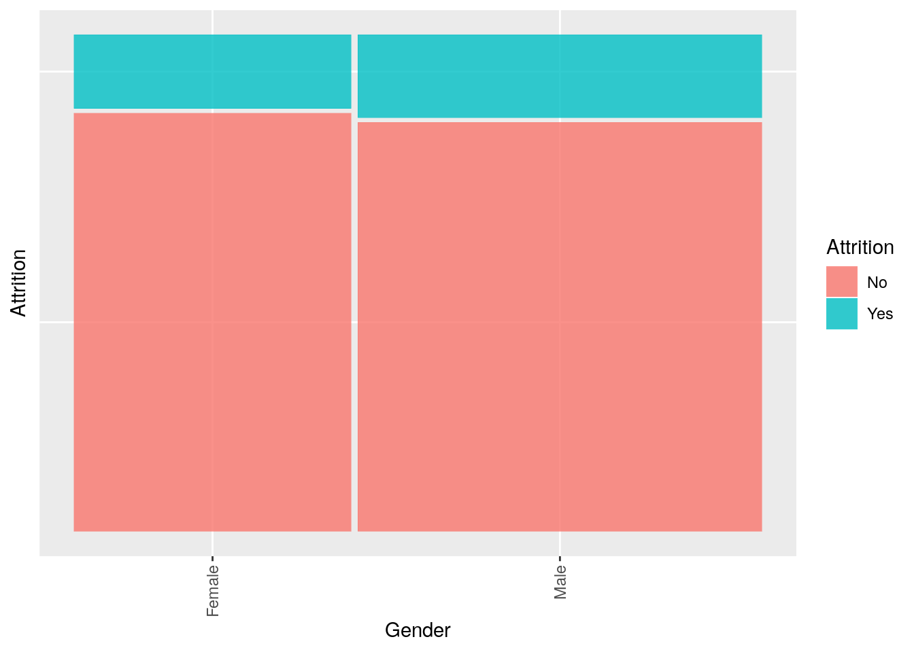
case_study_2 %>%
ggplot() +
geom_mosaic(aes(x = product(Attrition,MaritalStatus), fill = Attrition)) +
theme(axis.text.x = element_text(angle = 90,
hjust = 1,
vjust = 0.5),
axis.text.y = element_blank(),
axis.ticks.y = element_blank()) +
xlab("Marital Status") +
ylab("Attrition")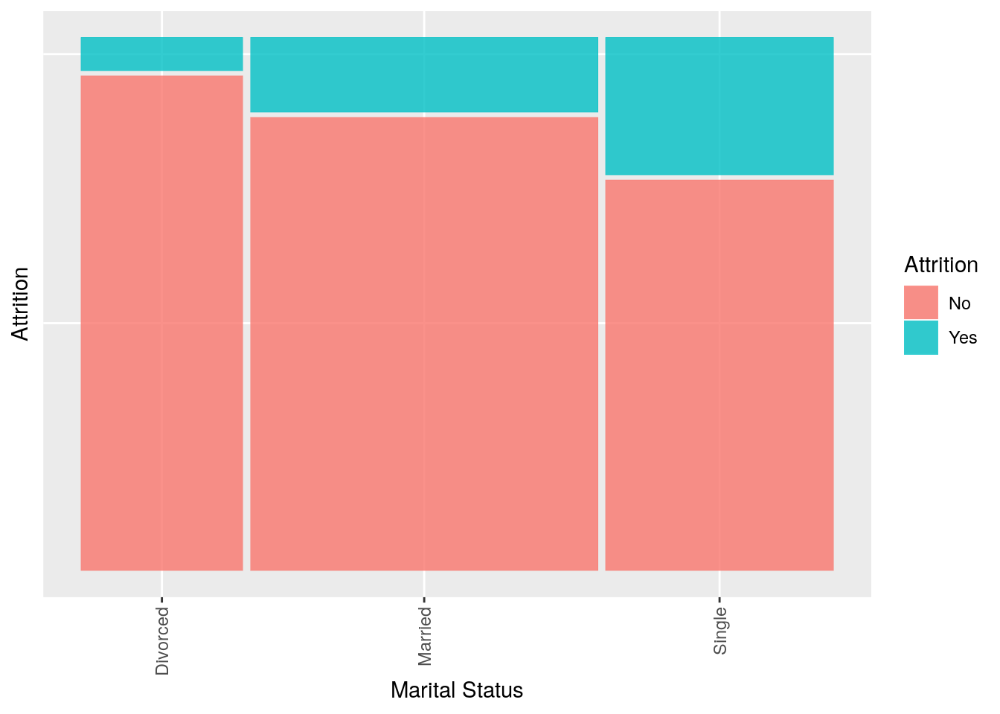
We see from both the proportion tables and from the mosiac plots these factors lead to differences in attrition rates We also see these are chosen in forward selection methods for logistic regression.
case_study_2 %>%
ggplot() +
geom_mosaic(aes(x = product(Attrition,DistanceFromHome), fill = Attrition)) +
theme(axis.text.x = element_text(angle = 90,
hjust = 1,
vjust = 0.5),
axis.text.y = element_blank(),
axis.ticks.y = element_blank()) +
xlab("Distiance From Home") +
ylab("Attrition")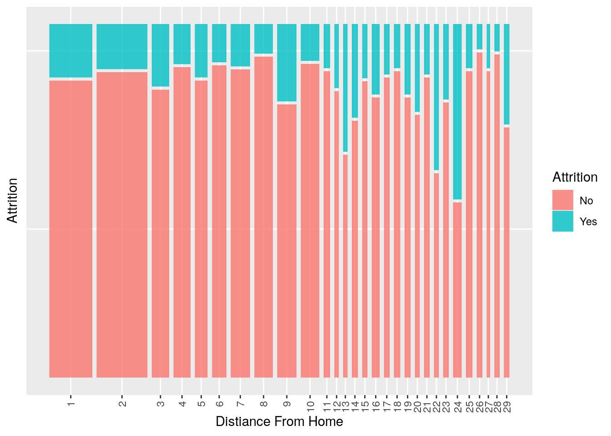
case_study_2 %>%
ggplot() +
geom_mosaic(aes(x = product(Attrition, JobRole), fill = Attrition)) +
theme(axis.text.x = element_text(angle = 90,
hjust = 1,
vjust = 0.5),
axis.text.y = element_blank(),
axis.ticks.y = element_blank()) +
xlab("Job Role") +
ylab("Attrition")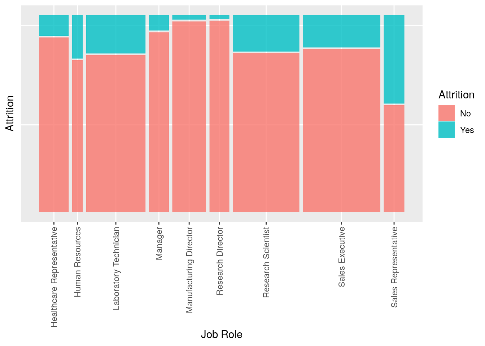
case_study_2 %>%
ggplot() +
geom_mosaic(aes(x = product(Attrition, OverTime), fill = Attrition)) +
theme(axis.text.x = element_text(angle = 90,
hjust = 1,
vjust = 0.5),
axis.text.y = element_blank(),
axis.ticks.y = element_blank()) +
xlab("Over Time") +
ylab("Attrition")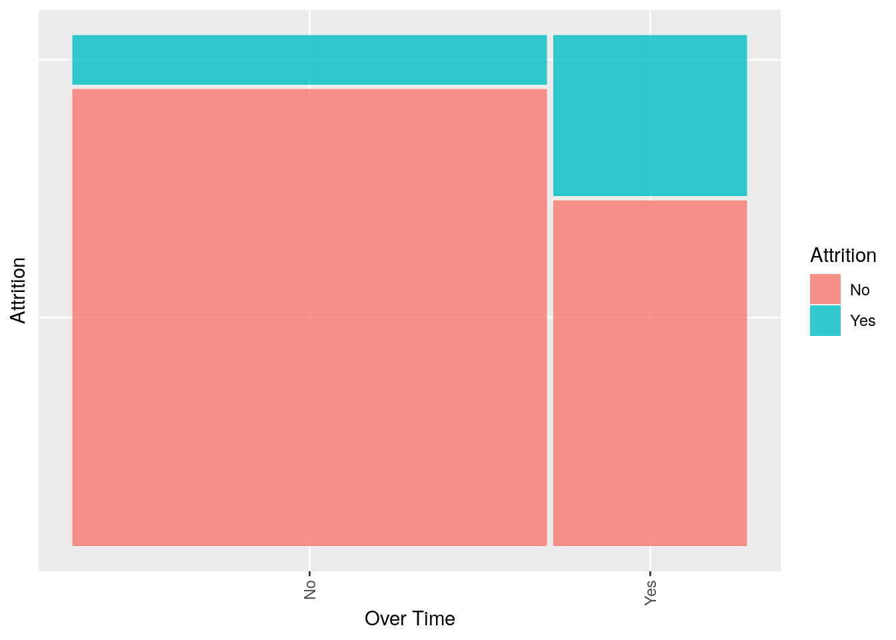
case_study_2 %>%
ggplot() +
geom_mosaic(aes(x = product(Attrition, NumCompaniesWorked), fill = Attrition)) +
theme(axis.text.x = element_text(angle = 90,
hjust = 1,
vjust = 0.5),
axis.text.y = element_blank(),
axis.ticks.y = element_blank()) +
xlab("Number of Companies") +
ylab("Attrition")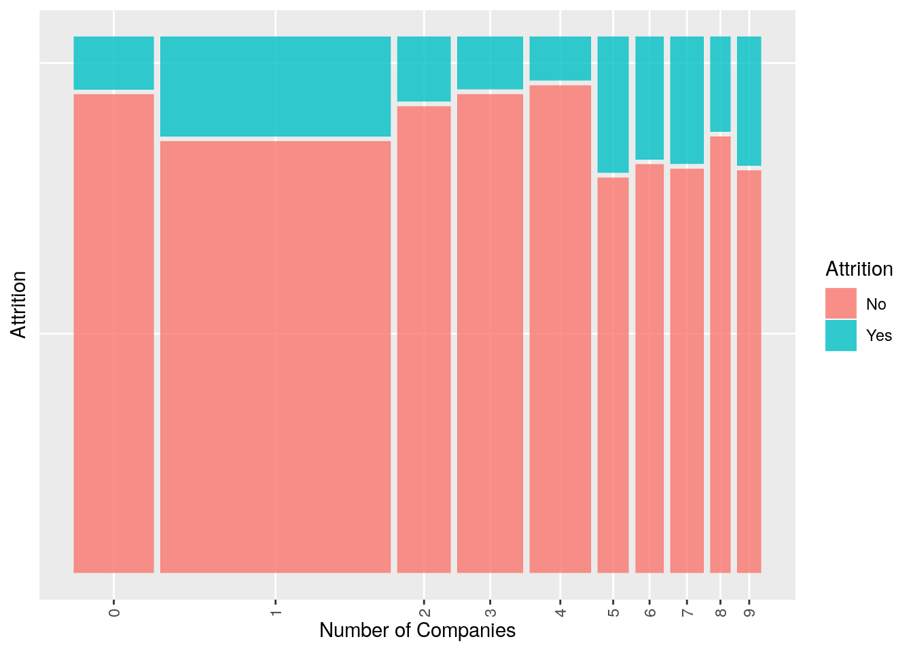
case_study_2 %>%
ggplot() +
geom_mosaic(aes(x = product(Attrition, WorkLifeBalance), fill = Attrition)) +
theme(axis.text.x = element_text(angle = 90,
hjust = 1,
vjust = 0.5),
axis.text.y = element_blank(),
axis.ticks.y = element_blank()) +
xlab("Work Life Balance") +
ylab("Attrition")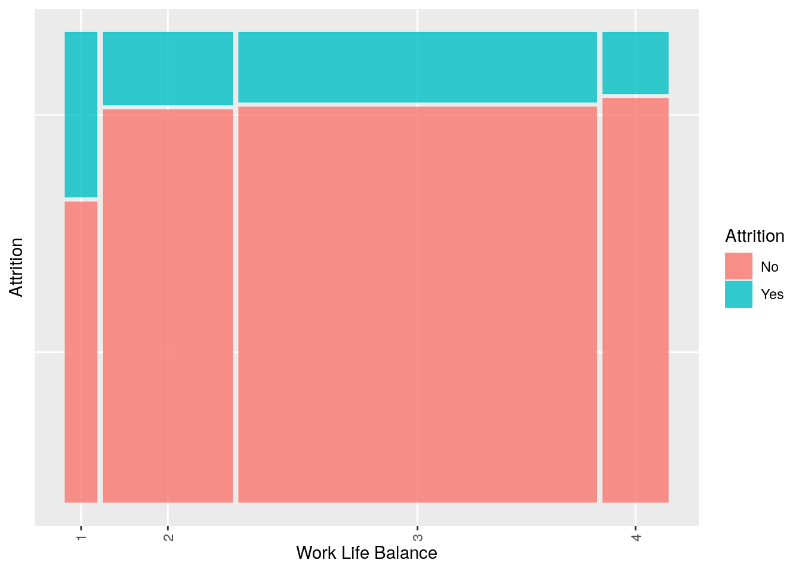
TEST/TRAIN DATA SAMPLING
#creating a more balanced data set by upsampling.
set.seed(7474)
case_study_2_sample = upSample(case_study_2[,-c(3)], case_study_2[,3])
#Controling Sampling by modifying the p in the create partition for creating the test train splits from the downsampled data for training.
set.seed(7474)
case_study2_sample_idx = createDataPartition(case_study_2_sample$Class, p=.35, list = FALSE, times = 1)
case_study2_sample_train = case_study_2_sample[case_study2_sample_idx,]
case_study2_sample_test = case_study_2_sample[-case_study2_sample_idx,]
#Removing Row Number Partitions indices
row.names(case_study2_sample_train) = NULL
row.names(case_study2_sample_test) = NULL
case_study2_sample_train = case_study2_sample_train[,-c(1,22)]
case_study2_sample_test = case_study2_sample_test[,-c(1,22)]
#for regression
set.seed(7474)
case_study2_sample_idx_r = sample(dim(case_study_2)[1], .35*dim(case_study_2)[1])
case_study2_sample_train_r = case_study_2[case_study2_sample_idx_r,]
case_study2_sample_test_r = case_study_2[-case_study2_sample_idx_r,]
#Removing Row Number Partitions indices
row.names(case_study2_sample_train_r) = NULL
row.names(case_study2_sample_test_r) = NULL
case_study2_sample_train_r = case_study2_sample_train_r[,-c(1,23)]
case_study2_sample_test_r = case_study2_sample_test_r[,-c(1,23)]NB model
nb_model_1 = naiveBayes(case_study2_sample_train[,-c(34)], as.factor(case_study2_sample_train$Class))
table_cm = table(predict(nb_model_1, case_study2_sample_test[,-c(34)]), as.factor(case_study2_sample_test$Class))
CM = confusionMatrix(table_cm)
CM## Confusion Matrix and Statistics
##
##
## No Yes
## No 294 90
## Yes 180 384
##
## Accuracy : 0.7152
## 95% CI : (0.6853, 0.7437)
## No Information Rate : 0.5
## P-Value [Acc > NIR] : < 2.2e-16
##
## Kappa : 0.4304
##
## Mcnemar's Test P-Value : 6.082e-08
##
## Sensitivity : 0.6203
## Specificity : 0.8101
## Pos Pred Value : 0.7656
## Neg Pred Value : 0.6809
## Prevalence : 0.5000
## Detection Rate : 0.3101
## Detection Prevalence : 0.4051
## Balanced Accuracy : 0.7152
##
## 'Positive' Class : No
## KNN model
colnames(case_study2_sample_test %>% select_if(is.factor))## [1] "BusinessTravel" "Department" "EducationField"
## [4] "Gender" "JobRole" "MaritalStatus"
## [7] "OverTime" "Class" knn_class = knn(case_study2_sample_train[,-c(2,4,7,11,15,17,21,34)],case_study2_sample_test[,-c(2,4,7,11,15,17,21,34)], case_study2_sample_train[,34], prob = TRUE, k = 2)
class_table = table(case_study2_sample_test[,34], knn_class)
confusemat = confusionMatrix(class_table)
confusemat## Confusion Matrix and Statistics
##
## knn_class
## No Yes
## No 259 215
## Yes 76 398
##
## Accuracy : 0.693
## 95% CI : (0.6626, 0.7223)
## No Information Rate : 0.6466
## P-Value [Acc > NIR] : 0.001422
##
## Kappa : 0.3861
##
## Mcnemar's Test P-Value : 5.981e-16
##
## Sensitivity : 0.7731
## Specificity : 0.6493
## Pos Pred Value : 0.5464
## Neg Pred Value : 0.8397
## Prevalence : 0.3534
## Detection Rate : 0.2732
## Detection Prevalence : 0.5000
## Balanced Accuracy : 0.7112
##
## 'Positive' Class : No
## We see from the above EDA, Working Years, Job Role and Job Level are all stastically significant pvalue <0.05 salary linear model
# need for confidence intervals
salary_model = lm(MonthlyIncome ~ TotalWorkingYears + JobLevel + JobRole + MonthlyRate + Gender + EmployeeNumber,data = case_study2_sample_train_r)
salary_model_all = lm(MonthlyIncome ~ .,data = case_study2_sample_train_r)
step(salary_model,
scope = list(upper=salary_model_all),
direction="forward",
test="Chisq",
data=case_study2_sample_train_r)## Start: AIC=4225.24
## MonthlyIncome ~ TotalWorkingYears + JobLevel + JobRole + MonthlyRate +
## Gender + EmployeeNumber
##
## Df Sum of Sq RSS AIC Pr(>Chi)
## + PerformanceRating 1 1987993 299347008 4225.2 0.15604
## <none> 301335000 4225.2
## + EducationField 5 9489586 291845415 4225.5 0.08334
## + RelationshipSatisfaction 1 1481253 299853748 4225.7 0.22097
## + StockOptionLevel 1 1394381 299940619 4225.8 0.23506
## + Department 1 886285 300448715 4226.3 0.34401
## + YearsSinceLastPromotion 1 620761 300714239 4226.6 0.42850
## + PercentSalaryHike 1 389602 300945398 4226.8 0.53057
## + JobInvolvement 1 296288 301038712 4226.9 0.58448
## + DistanceFromHome 1 184864 301150136 4227.1 0.66580
## + YearsAtCompany 1 112174 301222826 4227.1 0.73654
## + YearsWithCurrManager 1 101083 301233917 4227.1 0.74945
## + NumCompaniesWorked 1 94545 301240456 4227.1 0.75743
## + YearsInCurrentRole 1 89172 301245828 4227.1 0.76421
## + HourlyRate 1 78188 301256813 4227.2 0.77881
## + Education 1 73807 301261193 4227.2 0.78494
## + DailyRate 1 64886 301270114 4227.2 0.79805
## + EnvironmentSatisfaction 1 43802 301291199 4227.2 0.83350
## + Attrition 1 37724 301297276 4227.2 0.84532
## + WorkLifeBalance 1 33701 301301299 4227.2 0.85370
## + Age 1 16310 301318691 4227.2 0.89793
## + OverTime 1 5607 301329393 4227.2 0.94005
## + TrainingTimesLastYear 1 3784 301331217 4227.2 0.95074
## + JobSatisfaction 1 61 301334939 4227.2 0.99373
## + BusinessTravel 2 1560677 299774323 4227.7 0.45417
## + MaritalStatus 2 1421679 299913321 4227.8 0.48733
##
## + PerformanceRating
## <none>
## + EducationField .
## + RelationshipSatisfaction
## + StockOptionLevel
## + Department
## + YearsSinceLastPromotion
## + PercentSalaryHike
## + JobInvolvement
## + DistanceFromHome
## + YearsAtCompany
## + YearsWithCurrManager
## + NumCompaniesWorked
## + YearsInCurrentRole
## + HourlyRate
## + Education
## + DailyRate
## + EnvironmentSatisfaction
## + Attrition
## + WorkLifeBalance
## + Age
## + OverTime
## + TrainingTimesLastYear
## + JobSatisfaction
## + BusinessTravel
## + MaritalStatus
## ---
## Signif. codes: 0 '***' 0.001 '**' 0.01 '*' 0.05 '.' 0.1 ' ' 1
##
## Step: AIC=4225.23
## MonthlyIncome ~ TotalWorkingYears + JobLevel + JobRole + MonthlyRate +
## Gender + EmployeeNumber + PerformanceRating
##
## Df Sum of Sq RSS AIC Pr(>Chi)
## <none> 299347008 4225.2
## + RelationshipSatisfaction 1 1471490 297875517 4225.7 0.22097
## + StockOptionLevel 1 1464256 297882751 4225.7 0.22211
## + EducationField 5 9166984 290180024 4225.8 0.09224
## + Department 1 1040468 298306539 4226.2 0.30356
## + PercentSalaryHike 1 718882 298628126 4226.5 0.39258
## + YearsSinceLastPromotion 1 541115 298805893 4226.7 0.45831
## + JobInvolvement 1 323732 299023276 4226.9 0.56628
## + DistanceFromHome 1 190661 299156347 4227.0 0.65987
## + NumCompaniesWorked 1 142102 299204905 4227.1 0.70400
## + YearsWithCurrManager 1 113599 299233408 4227.1 0.73409
## + Education 1 90306 299256702 4227.1 0.76200
## + DailyRate 1 78292 299268715 4227.1 0.77795
## + YearsInCurrentRole 1 71504 299275503 4227.2 0.78755
## + EnvironmentSatisfaction 1 69203 299277805 4227.2 0.79092
## + YearsAtCompany 1 62227 299284780 4227.2 0.80151
## + WorkLifeBalance 1 40018 299306989 4227.2 0.84023
## + HourlyRate 1 34524 299312483 4227.2 0.85146
## + Attrition 1 20613 299326395 4227.2 0.88496
## + TrainingTimesLastYear 1 10899 299336109 4227.2 0.91621
## + OverTime 1 8654 299338353 4227.2 0.92531
## + Age 1 2741 299344267 4227.2 0.95792
## + JobSatisfaction 1 318 299346689 4227.2 0.98565
## + BusinessTravel 2 1551977 297795030 4227.6 0.45380
## + MaritalStatus 2 1231043 298115965 4228.0 0.53452
##
## <none>
## + RelationshipSatisfaction
## + StockOptionLevel
## + EducationField .
## + Department
## + PercentSalaryHike
## + YearsSinceLastPromotion
## + JobInvolvement
## + DistanceFromHome
## + NumCompaniesWorked
## + YearsWithCurrManager
## + Education
## + DailyRate
## + YearsInCurrentRole
## + EnvironmentSatisfaction
## + YearsAtCompany
## + WorkLifeBalance
## + HourlyRate
## + Attrition
## + TrainingTimesLastYear
## + OverTime
## + Age
## + JobSatisfaction
## + BusinessTravel
## + MaritalStatus
## ---
## Signif. codes: 0 '***' 0.001 '**' 0.01 '*' 0.05 '.' 0.1 ' ' 1##
## Call:
## lm(formula = MonthlyIncome ~ TotalWorkingYears + JobLevel + JobRole +
## MonthlyRate + Gender + EmployeeNumber + PerformanceRating,
## data = case_study2_sample_train_r)
##
## Coefficients:
## (Intercept) TotalWorkingYears
## 456.32865 59.45786
## JobLevel JobRoleHuman Resources
## 2760.44296 -585.48286
## JobRoleLaboratory Technician JobRoleManager
## -549.70822 3941.79927
## JobRoleManufacturing Director JobRoleResearch Director
## 280.52167 3618.71036
## JobRoleResearch Scientist JobRoleSales Executive
## -278.77541 -17.30555
## JobRoleSales Representative MonthlyRate
## -317.70256 -0.01944
## GenderMale EmployeeNumber
## 263.92014 0.20903
## PerformanceRating
## -217.86178#salary_model = lm(MonthlyIncome ~ TotalWorkingYears , data = case_study2_sample_train)
summary(salary_model)##
## Call:
## lm(formula = MonthlyIncome ~ TotalWorkingYears + JobLevel + JobRole +
## MonthlyRate + Gender + EmployeeNumber, data = case_study2_sample_train_r)
##
## Residuals:
## Min 1Q Median 3Q Max
## -3402.2 -573.7 -47.9 652.5 3196.4
##
## Coefficients:
## Estimate Std. Error t value
## (Intercept) -2.719e+02 3.643e+02 -0.746
## TotalWorkingYears 6.099e+01 1.304e+01 4.678
## JobLevel 2.753e+03 1.339e+02 20.563
## JobRoleHuman Resources -5.582e+02 3.878e+02 -1.439
## JobRoleLaboratory Technician -5.186e+02 2.788e+02 -1.860
## JobRoleManager 3.955e+03 3.646e+02 10.849
## JobRoleManufacturing Director 2.997e+02 2.852e+02 1.051
## JobRoleResearch Director 3.668e+03 3.403e+02 10.779
## JobRoleResearch Scientist -2.618e+02 2.837e+02 -0.923
## JobRoleSales Executive 1.019e+01 2.374e+02 0.043
## JobRoleSales Representative -2.809e+02 3.454e+02 -0.813
## MonthlyRate -1.891e-02 8.386e-03 -2.255
## GenderMale 2.628e+02 1.196e+02 2.197
## EmployeeNumber 2.129e-01 1.030e-01 2.067
## Pr(>|t|)
## (Intercept) 0.4562
## TotalWorkingYears 4.45e-06 ***
## JobLevel < 2e-16 ***
## JobRoleHuman Resources 0.1511
## JobRoleLaboratory Technician 0.0638 .
## JobRoleManager < 2e-16 ***
## JobRoleManufacturing Director 0.2941
## JobRoleResearch Director < 2e-16 ***
## JobRoleResearch Scientist 0.3569
## JobRoleSales Executive 0.9658
## JobRoleSales Representative 0.4167
## MonthlyRate 0.0249 *
## GenderMale 0.0288 *
## EmployeeNumber 0.0397 *
## ---
## Signif. codes: 0 '***' 0.001 '**' 0.01 '*' 0.05 '.' 0.1 ' ' 1
##
## Residual standard error: 1019 on 290 degrees of freedom
## Multiple R-squared: 0.9547, Adjusted R-squared: 0.9527
## F-statistic: 470.5 on 13 and 290 DF, p-value: < 2.2e-16confint(salary_model)## 2.5 % 97.5 %
## (Intercept) -9.889341e+02 4.452286e+02
## TotalWorkingYears 3.532994e+01 8.665687e+01
## JobLevel 2.489568e+03 3.016585e+03
## JobRoleHuman Resources -1.321457e+03 2.050846e+02
## JobRoleLaboratory Technician -1.067303e+03 3.005098e+01
## JobRoleManager 3.237706e+03 4.672805e+03
## JobRoleManufacturing Director -2.615316e+02 8.610244e+02
## JobRoleResearch Director 2.998105e+03 4.337625e+03
## JobRoleResearch Scientist -8.202221e+02 2.966300e+02
## JobRoleSales Executive -4.571112e+02 4.774921e+02
## JobRoleSales Representative -9.607156e+02 3.988678e+02
## MonthlyRate -3.541519e-02 -2.403929e-03
## GenderMale 2.740956e+01 4.981899e+02
## EmployeeNumber 1.013602e-02 4.156338e-01vif(salary_model)## GVIF Df GVIF^(1/(2*Df))
## TotalWorkingYears 2.811645 1 1.676796
## JobLevel 6.468078 1 2.543242
## JobRole 4.978251 8 1.105522
## MonthlyRate 1.059364 1 1.029254
## Gender 1.020106 1 1.010003
## EmployeeNumber 1.041268 1 1.020425#preditive final model
final_model = train(MonthlyIncome ~ TotalWorkingYears + JobLevel + JobRole + MonthlyRate + Gender + EmployeeNumber, method = "lm", data = case_study2_sample_train_r, trControl = trainControl(method = "LOOCV"))
final_model## Linear Regression
##
## 304 samples
## 6 predictor
##
## No pre-processing
## Resampling: Leave-One-Out Cross-Validation
## Summary of sample sizes: 303, 303, 303, 303, 303, 303, ...
## Resampling results:
##
## RMSE Rsquared MAE
## 1044.334 0.9501975 810.7875
##
## Tuning parameter 'intercept' was held constant at a value of TRUEsummary(final_model)##
## Call:
## lm(formula = .outcome ~ ., data = dat)
##
## Residuals:
## Min 1Q Median 3Q Max
## -3402.2 -573.7 -47.9 652.5 3196.4
##
## Coefficients:
## Estimate Std. Error t value
## (Intercept) -2.719e+02 3.643e+02 -0.746
## TotalWorkingYears 6.099e+01 1.304e+01 4.678
## JobLevel 2.753e+03 1.339e+02 20.563
## `JobRoleHuman Resources` -5.582e+02 3.878e+02 -1.439
## `JobRoleLaboratory Technician` -5.186e+02 2.788e+02 -1.860
## JobRoleManager 3.955e+03 3.646e+02 10.849
## `JobRoleManufacturing Director` 2.997e+02 2.852e+02 1.051
## `JobRoleResearch Director` 3.668e+03 3.403e+02 10.779
## `JobRoleResearch Scientist` -2.618e+02 2.837e+02 -0.923
## `JobRoleSales Executive` 1.019e+01 2.374e+02 0.043
## `JobRoleSales Representative` -2.809e+02 3.454e+02 -0.813
## MonthlyRate -1.891e-02 8.386e-03 -2.255
## GenderMale 2.628e+02 1.196e+02 2.197
## EmployeeNumber 2.129e-01 1.030e-01 2.067
## Pr(>|t|)
## (Intercept) 0.4562
## TotalWorkingYears 4.45e-06 ***
## JobLevel < 2e-16 ***
## `JobRoleHuman Resources` 0.1511
## `JobRoleLaboratory Technician` 0.0638 .
## JobRoleManager < 2e-16 ***
## `JobRoleManufacturing Director` 0.2941
## `JobRoleResearch Director` < 2e-16 ***
## `JobRoleResearch Scientist` 0.3569
## `JobRoleSales Executive` 0.9658
## `JobRoleSales Representative` 0.4167
## MonthlyRate 0.0249 *
## GenderMale 0.0288 *
## EmployeeNumber 0.0397 *
## ---
## Signif. codes: 0 '***' 0.001 '**' 0.01 '*' 0.05 '.' 0.1 ' ' 1
##
## Residual standard error: 1019 on 290 degrees of freedom
## Multiple R-squared: 0.9547, Adjusted R-squared: 0.9527
## F-statistic: 470.5 on 13 and 290 DF, p-value: < 2.2e-16salary_pred = predict(final_model, newdata = case_study2_sample_test_r, interval = "prediction")
salary_pred## 1 2 3 4 5 6
## 6003.193 18613.441 2610.212 9163.972 3112.283 5509.630
## 7 8 9 10 11 12
## 2137.762 6035.103 18700.688 2565.921 9409.894 2302.569
## 13 14 15 16 17 18
## 2378.596 5971.341 5761.291 3116.172 6335.085 6039.124
## 19 20 21 22 23 24
## 5358.413 6052.124 19401.662 6220.381 9483.737 2452.800
## 25 26 27 28 29 30
## 5666.379 3182.914 16197.593 2775.850 2113.969 6688.396
## 31 32 33 34 35 36
## 20116.134 17176.646 2884.232 2493.994 2698.375 6256.673
## 37 38 39 40 41 42
## 2441.419 2781.707 18991.486 2716.766 2519.572 2866.386
## 43 44 45 46 47 48
## 2643.063 8767.943 2950.109 6053.055 2693.771 2694.967
## 49 50 51 52 53 54
## 5741.793 6047.315 8964.719 9146.270 2112.228 6561.808
## 55 56 57 58 59 60
## 5807.644 6863.474 12676.923 6658.533 2554.883 8764.973
## 61 62 63 64 65 66
## 18367.176 2175.836 8705.437 2607.896 6102.228 18455.295
## 67 68 69 70 71 72
## 6345.656 6263.862 2440.396 2627.479 2751.428 5480.882
## 73 74 75 76 77 78
## 2775.715 16745.526 5954.061 19778.302 6209.861 2493.203
## 79 80 81 82 83 84
## 16490.613 9296.331 6284.301 8971.719 5686.263 5577.701
## 85 86 87 88 89 90
## 3236.313 2533.530 9178.380 5736.049 5816.716 6015.200
## 91 92 93 94 95 96
## 2747.871 6094.196 6112.589 5951.589 6430.441 5242.238
## 97 98 99 100 101 102
## 5706.255 2070.819 9580.975 13263.257 2389.582 9099.450
## 103 104 105 106 107 108
## 5583.104 5531.006 2719.881 5858.417 5860.533 6260.535
## 109 110 111 112 113 114
## 2354.825 5474.823 12267.868 9406.591 12699.280 5308.033
## 115 116 117 118 119 120
## 8856.825 5631.033 5221.087 8982.281 16341.319 14721.598
## 121 122 123 124 125 126
## 6049.647 2618.833 6582.735 2103.284 2782.170 8295.794
## 127 128 129 130 131 132
## 5780.875 9346.054 3049.458 2240.750 2818.042 6481.662
## 133 134 135 136 137 138
## 16422.586 5672.124 5511.647 3010.140 2505.945 12372.935
## 139 140 141 142 143 144
## 2251.199 11979.598 5726.765 2913.892 2239.601 3022.566
## 145 146 147 148 149 150
## 5744.919 6379.322 8628.949 6121.447 2649.280 3131.840
## 151 152 153 154 155 156
## 6047.850 2113.567 2626.889 3234.884 2552.333 2149.541
## 157 158 159 160 161 162
## 5963.219 16148.357 9221.585 19280.434 5140.959 12751.003
## 163 164 165 166 167 168
## 2774.483 6317.107 2530.218 5736.916 5959.227 2293.497
## 169 170 171 172 173 174
## 12730.346 2333.310 2938.416 3334.058 2246.419 2372.607
## 175 176 177 178 179 180
## 2282.728 15737.575 6282.566 5875.341 5630.835 5965.955
## 181 182 183 184 185 186
## 19421.796 19058.902 1988.049 2401.219 5393.698 5755.357
## 187 188 189 190 191 192
## 6365.644 6182.777 2449.631 2246.600 8206.273 5344.814
## 193 194 195 196 197 198
## 16240.675 2574.195 6195.146 5125.926 2413.098 5919.140
## 199 200 201 202 203 204
## 2576.592 2660.506 6508.438 5605.310 12124.924 2894.998
## 205 206 207 208 209 210
## 6187.287 5844.881 5895.796 3230.583 5963.646 2142.301
## 211 212 213 214 215 216
## 6262.184 15962.112 16295.094 3019.933 18893.857 6001.630
## 217 218 219 220 221 222
## 5704.481 5737.826 5722.990 2349.060 8631.930 1996.825
## 223 224 225 226 227 228
## 6003.587 12240.161 5475.603 3024.013 13142.090 5974.313
## 229 230 231 232 233 234
## 5798.664 9286.493 6436.344 2118.715 2359.623 6156.713
## 235 236 237 238 239 240
## 2897.761 2733.300 19193.806 19003.833 12714.448 2822.580
## 241 242 243 244 245 246
## 5476.267 5780.042 8673.559 8901.853 2544.082 3125.942
## 247 248 249 250 251 252
## 6719.996 2641.921 2280.068 6265.418 2490.155 8502.346
## 253 254 255 256 257 258
## 5986.659 6213.629 2312.017 5530.871 3065.357 2609.404
## 259 260 261 262 263 264
## 16336.091 6225.208 5951.599 2682.346 8456.804 2430.044
## 265 266 267 268 269 270
## 16042.189 6163.766 16174.994 8933.833 2789.773 2269.732
## 271 272 273 274 275 276
## 6633.605 2421.341 5789.851 1888.775 5649.312 9487.697
## 277 278 279 280 281 282
## 2723.475 2546.755 2358.853 6214.018 2972.117 6071.203
## 283 284 285 286 287 288
## 8743.867 5765.363 2653.838 2750.591 2584.040 5801.141
## 289 290 291 292 293 294
## 3632.272 6562.690 6383.157 5239.256 6003.502 5862.472
## 295 296 297 298 299 300
## 2762.105 6244.651 6329.967 19280.629 5783.433 6044.489
## 301 302 303 304 305 306
## 2632.725 5466.466 2664.057 3286.415 6326.429 2929.612
## 307 308 309 310 311 312
## 2771.873 1872.166 5742.532 5395.859 3144.431 2661.917
## 313 314 315 316 317 318
## 12691.521 2887.636 5776.634 6046.114 2666.147 12767.976
## 319 320 321 322 323 324
## 6161.326 6121.465 3166.027 2620.553 2503.743 5866.214
## 325 326 327 328 329 330
## 18103.581 5903.768 8583.017 6140.057 2596.217 6223.292
## 331 332 333 334 335 336
## 6189.687 10240.093 3497.165 8708.532 15796.398 5740.018
## 337 338 339 340 341 342
## 2191.520 3274.210 18268.743 6175.806 12299.279 2695.205
## 343 344 345 346 347 348
## 6367.995 2371.298 2742.305 2606.723 2489.365 9176.270
## 349 350 351 352 353 354
## 19410.628 9605.824 5806.234 8973.537 5886.629 2659.010
## 355 356 357 358 359 360
## 2866.098 8719.900 6262.916 5635.131 6571.182 2614.159
## 361 362 363 364 365 366
## 2806.896 9013.493 18839.789 2283.627 3371.502 6626.913
## 367 368 369 370 371 372
## 5554.583 2555.326 6361.506 2784.163 16056.136 12361.507
## 373 374 375 376 377 378
## 2363.016 3024.411 5231.261 6349.095 5997.244 2309.186
## 379 380 381 382 383 384
## 5980.370 6086.883 5869.250 6189.345 2814.739 6432.246
## 385 386 387 388 389 390
## 6051.800 15183.162 6323.934 5692.986 5640.753 5734.969
## 391 392 393 394 395 396
## 2946.679 2389.640 1919.947 6389.593 2786.645 2498.828
## 397 398 399 400 401 402
## 9243.715 6504.363 2800.661 2445.242 5643.296 2328.175
## 403 404 405 406 407 408
## 6017.270 2569.172 2200.168 5935.435 2418.612 2540.156
## 409 410 411 412 413 414
## 8890.693 8832.344 2116.690 1678.669 2742.788 8097.724
## 415 416 417 418 419 420
## 2994.555 5569.443 8355.127 3889.032 9401.383 6792.526
## 421 422 423 424 425 426
## 8518.182 2097.850 16325.168 8791.353 2575.208 2036.574
## 427 428 429 430 431 432
## 2919.308 2661.054 2215.154 2656.553 3123.240 6295.717
## 433 434 435 436 437 438
## 12862.722 12504.815 2422.986 12659.389 16142.671 6192.822
## 439 440 441 442 443 444
## 5352.894 9316.180 2446.807 5940.259 8610.131 5435.086
## 445 446 447 448 449 450
## 12438.033 5909.432 2702.788 2449.740 5240.482 6889.203
## 451 452 453 454 455 456
## 2536.965 6324.817 8587.049 2708.078 9194.339 8405.231
## 457 458 459 460 461 462
## 2163.379 3228.203 12701.248 2709.828 6089.987 2331.784
## 463 464 465 466 467 468
## 5831.030 2197.711 2352.011 5747.813 8977.977 2195.965
## 469 470 471 472 473 474
## 6356.748 2256.664 2337.263 12282.526 16613.278 9201.641
## 475 476 477 478 479 480
## 2392.648 6458.160 8983.687 9124.890 6192.031 3013.238
## 481 482 483 484 485 486
## 9134.156 2851.687 5771.607 1979.858 2079.420 5523.562
## 487 488 489 490 491 492
## 5734.971 2028.103 5555.378 2461.777 5686.986 5992.544
## 493 494 495 496 497 498
## 5401.406 6116.405 5781.295 2487.792 2762.673 6116.048
## 499 500 501 502 503 504
## 2226.225 12905.716 2892.939 2253.712 19259.327 16210.620
## 505 506 507 508 509 510
## 9396.101 6460.540 6057.380 2211.580 9691.426 2399.921
## 511 512 513 514 515 516
## 2579.176 2231.985 2787.269 2663.726 2086.202 6210.974
## 517 518 519 520 521 522
## 6021.393 6052.904 15094.392 5662.823 2262.737 5210.608
## 523 524 525 526 527 528
## 2712.959 8977.266 8886.838 12221.467 5805.117 5569.911
## 529 530 531 532 533 534
## 9055.458 5553.042 19342.838 2607.343 3541.342 6060.685
## 535 536 537 538 539 540
## 5580.382 5995.889 6069.721 18649.102 5646.975 2584.363
## 541 542 543 544 545 546
## 19649.215 5475.254 2614.821 12865.163 8476.151 3168.947
## 547 548 549 550 551 552
## 19333.611 8419.281 12755.756 9042.339 5446.573 1761.899
## 553 554 555 556 557 558
## 5984.440 2987.362 5056.989 5088.991 5699.445 2535.534
## 559 560 561 562 563 564
## 8725.776 2563.299 2646.159 12423.921 9193.385 9157.290
## 565 566
## 5593.935 2520.697RSME = sqrt(mean((salary_pred-case_study2_sample_test_r$MonthlyIncome)^2))
salary_pred_submit = predict(final_model, newdata = case_study_salary_preds , interval = "prediction")
case_study_salary_preds["MonthlyIncome"] = salary_pred_submit
par(mfrow=c(1,2))
plot(salary_model$fitted.values,salary_model$residuals,ylab="Resdiduals",xlab="Fitted")
qqnorm(salary_model$residuals)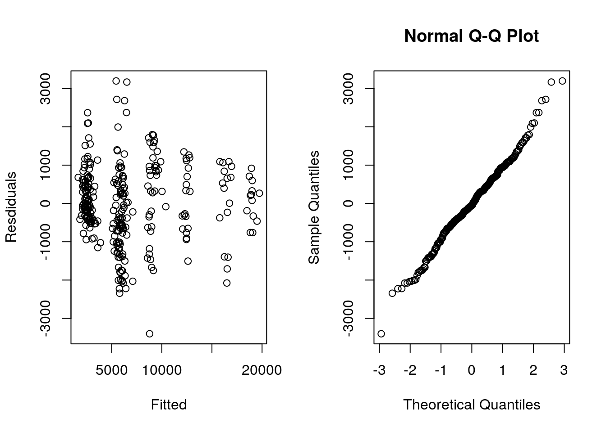
case_study_salary_preds_out = case_study_salary_preds[,c("ID", "MonthlyIncome")]
head(case_study_salary_preds_out, n= 5)## ID MonthlyIncome
## 1 871 5963.935
## 2 872 2410.196
## 3 873 12593.940
## 4 874 2770.591
## 5 875 2688.975#Looking at logistic regression
#Starting with a base logistic regression model for using as a forward selection criteria later
main.logr = glm(Class ~ .,data=case_study2_sample_train ,family=binomial(link='logit'))
#Looking at some highly influential factors for predicting attrition from EDA analysis above
main.logr_l_3 = glm(Class ~ Age + DailyRate + Department + Education + EducationField + JobLevel + JobSatisfaction + MaritalStatus + YearsInCurrentRole,data=case_study2_sample_train ,family=binomial(link='logit'))
#Performing step forward selection and looking at AIC of models for best fit criteria to data
step(main.logr_l_3,
scope = list(upper=main.logr),
direction="forward",
test="Chisq",
data=case_study2_sample_train)## Start: AIC=618.59
## Class ~ Age + DailyRate + Department + Education + EducationField +
## JobLevel + JobSatisfaction + MaritalStatus + YearsInCurrentRole
##
## Df Deviance AIC LRT Pr(>Chi)
## + OverTime 1 503.72 537.72 82.866 < 2.2e-16 ***
## + JobInvolvement 1 569.43 603.43 17.162 3.432e-05 ***
## + TrainingTimesLastYear 1 570.74 604.74 15.853 6.847e-05 ***
## + YearsSinceLastPromotion 1 570.78 604.78 15.805 7.021e-05 ***
## + BusinessTravel 2 571.50 607.50 15.088 0.0005292 ***
## + NumCompaniesWorked 1 573.91 607.91 12.678 0.0003699 ***
## + WorkLifeBalance 1 577.01 611.01 9.584 0.0019625 **
## + YearsWithCurrManager 1 582.10 616.10 4.486 0.0341763 *
## + EnvironmentSatisfaction 1 582.17 616.17 4.419 0.0355353 *
## + DistanceFromHome 1 582.61 616.61 3.979 0.0460735 *
## + RelationshipSatisfaction 1 583.81 617.81 2.778 0.0955918 .
## + MonthlyIncome 1 584.05 618.05 2.541 0.1108904
## + HourlyRate 1 584.18 618.18 2.405 0.1209757
## <none> 586.59 618.59
## + MonthlyRate 1 585.15 619.15 1.438 0.2304805
## + Gender 1 585.50 619.50 1.086 0.2974134
## + StockOptionLevel 1 585.79 619.79 0.804 0.3697644
## + YearsAtCompany 1 586.00 620.00 0.591 0.4419524
## + PerformanceRating 1 586.37 620.37 0.218 0.6408549
## + TotalWorkingYears 1 586.46 620.46 0.125 0.7231572
## + PercentSalaryHike 1 586.52 620.52 0.067 0.7951220
## + EmployeeNumber 1 586.56 620.56 0.028 0.8660415
## + JobRole 8 575.96 623.96 10.630 0.2235881
## ---
## Signif. codes: 0 '***' 0.001 '**' 0.01 '*' 0.05 '.' 0.1 ' ' 1
##
## Step: AIC=537.72
## Class ~ Age + DailyRate + Department + Education + EducationField +
## JobLevel + JobSatisfaction + MaritalStatus + YearsInCurrentRole +
## OverTime
##
## Df Deviance AIC LRT Pr(>Chi)
## + JobInvolvement 1 488.94 524.94 14.7808 0.0001208
## + TrainingTimesLastYear 1 489.30 525.30 14.4234 0.0001460
## + YearsSinceLastPromotion 1 490.19 526.19 13.5301 0.0002348
## + NumCompaniesWorked 1 493.16 529.16 10.5639 0.0011531
## + WorkLifeBalance 1 493.42 529.42 10.2988 0.0013312
## + EnvironmentSatisfaction 1 495.55 531.55 8.1725 0.0042529
## + BusinessTravel 2 495.07 533.07 8.6579 0.0131815
## + YearsWithCurrManager 1 498.94 534.94 4.7845 0.0287175
## + RelationshipSatisfaction 1 499.05 535.05 4.6745 0.0306136
## + MonthlyIncome 1 501.17 537.17 2.5506 0.1102505
## + DistanceFromHome 1 501.37 537.37 2.3534 0.1250064
## <none> 503.72 537.72
## + Gender 1 502.18 538.18 1.5399 0.2146359
## + JobRole 8 488.25 538.25 15.4733 0.0505705
## + MonthlyRate 1 502.27 538.27 1.4529 0.2280573
## + StockOptionLevel 1 502.69 538.69 1.0327 0.3095205
## + HourlyRate 1 502.71 538.71 1.0102 0.3148651
## + YearsAtCompany 1 502.84 538.84 0.8876 0.3461314
## + TotalWorkingYears 1 503.47 539.47 0.2512 0.6162359
## + PerformanceRating 1 503.65 539.65 0.0705 0.7906739
## + PercentSalaryHike 1 503.68 539.68 0.0395 0.8425348
## + EmployeeNumber 1 503.72 539.72 0.0032 0.9548503
##
## + JobInvolvement ***
## + TrainingTimesLastYear ***
## + YearsSinceLastPromotion ***
## + NumCompaniesWorked **
## + WorkLifeBalance **
## + EnvironmentSatisfaction **
## + BusinessTravel *
## + YearsWithCurrManager *
## + RelationshipSatisfaction *
## + MonthlyIncome
## + DistanceFromHome
## <none>
## + Gender
## + JobRole .
## + MonthlyRate
## + StockOptionLevel
## + HourlyRate
## + YearsAtCompany
## + TotalWorkingYears
## + PerformanceRating
## + PercentSalaryHike
## + EmployeeNumber
## ---
## Signif. codes: 0 '***' 0.001 '**' 0.01 '*' 0.05 '.' 0.1 ' ' 1
##
## Step: AIC=524.94
## Class ~ Age + DailyRate + Department + Education + EducationField +
## JobLevel + JobSatisfaction + MaritalStatus + YearsInCurrentRole +
## OverTime + JobInvolvement
##
## Df Deviance AIC LRT Pr(>Chi)
## + YearsSinceLastPromotion 1 473.55 511.55 15.3904 8.743e-05
## + TrainingTimesLastYear 1 474.76 512.76 14.1807 0.0001661
## + WorkLifeBalance 1 478.05 516.05 10.8913 0.0009662
## + NumCompaniesWorked 1 480.52 518.52 8.4271 0.0036968
## + BusinessTravel 2 478.63 518.63 10.3129 0.0057621
## + EnvironmentSatisfaction 1 483.03 521.03 5.9092 0.0150623
## + YearsWithCurrManager 1 484.32 522.32 4.6212 0.0315797
## + RelationshipSatisfaction 1 485.11 523.11 3.8327 0.0502624
## + JobRole 8 472.62 524.62 16.3190 0.0380347
## + MonthlyIncome 1 486.67 524.67 2.2764 0.1313562
## + DistanceFromHome 1 486.70 524.70 2.2446 0.1340792
## + StockOptionLevel 1 486.92 524.92 2.0186 0.1553873
## <none> 488.94 524.94
## + HourlyRate 1 486.94 524.94 1.9981 0.1574956
## + Gender 1 487.92 525.92 1.0239 0.3116042
## + MonthlyRate 1 487.98 525.98 0.9584 0.3275779
## + YearsAtCompany 1 488.46 526.46 0.4781 0.4893049
## + PercentSalaryHike 1 488.75 526.75 0.1879 0.6646485
## + PerformanceRating 1 488.84 526.84 0.1062 0.7445625
## + TotalWorkingYears 1 488.93 526.93 0.0086 0.9262107
## + EmployeeNumber 1 488.94 526.94 0.0000 0.9992869
##
## + YearsSinceLastPromotion ***
## + TrainingTimesLastYear ***
## + WorkLifeBalance ***
## + NumCompaniesWorked **
## + BusinessTravel **
## + EnvironmentSatisfaction *
## + YearsWithCurrManager *
## + RelationshipSatisfaction .
## + JobRole *
## + MonthlyIncome
## + DistanceFromHome
## + StockOptionLevel
## <none>
## + HourlyRate
## + Gender
## + MonthlyRate
## + YearsAtCompany
## + PercentSalaryHike
## + PerformanceRating
## + TotalWorkingYears
## + EmployeeNumber
## ---
## Signif. codes: 0 '***' 0.001 '**' 0.01 '*' 0.05 '.' 0.1 ' ' 1
##
## Step: AIC=511.55
## Class ~ Age + DailyRate + Department + Education + EducationField +
## JobLevel + JobSatisfaction + MaritalStatus + YearsInCurrentRole +
## OverTime + JobInvolvement + YearsSinceLastPromotion
##
## Df Deviance AIC LRT Pr(>Chi)
## + TrainingTimesLastYear 1 459.67 499.67 13.8772 0.0001952
## + NumCompaniesWorked 1 461.07 501.07 12.4854 0.0004101
## + WorkLifeBalance 1 462.78 502.78 10.7757 0.0010284
## + YearsWithCurrManager 1 464.94 504.94 8.6085 0.0033460
## + BusinessTravel 2 464.05 506.05 9.5019 0.0086434
## + EnvironmentSatisfaction 1 466.22 506.22 7.3312 0.0067768
## + RelationshipSatisfaction 1 469.44 509.44 4.1136 0.0425395
## + StockOptionLevel 1 469.85 509.85 3.7013 0.0543712
## + MonthlyIncome 1 470.07 510.07 3.4788 0.0621590
## + DistanceFromHome 1 471.13 511.13 2.4256 0.1193659
## <none> 473.55 511.55
## + HourlyRate 1 471.58 511.58 1.9770 0.1597105
## + MonthlyRate 1 471.77 511.77 1.7837 0.1816965
## + Gender 1 472.39 512.39 1.1610 0.2812528
## + JobRole 8 458.41 512.41 15.1395 0.0564891
## + YearsAtCompany 1 473.20 513.20 0.3513 0.5533651
## + PerformanceRating 1 473.25 513.25 0.2973 0.5855785
## + TotalWorkingYears 1 473.28 513.28 0.2748 0.6001461
## + EmployeeNumber 1 473.48 513.48 0.0682 0.7939086
## + PercentSalaryHike 1 473.53 513.53 0.0235 0.8782126
##
## + TrainingTimesLastYear ***
## + NumCompaniesWorked ***
## + WorkLifeBalance **
## + YearsWithCurrManager **
## + BusinessTravel **
## + EnvironmentSatisfaction **
## + RelationshipSatisfaction *
## + StockOptionLevel .
## + MonthlyIncome .
## + DistanceFromHome
## <none>
## + HourlyRate
## + MonthlyRate
## + Gender
## + JobRole .
## + YearsAtCompany
## + PerformanceRating
## + TotalWorkingYears
## + EmployeeNumber
## + PercentSalaryHike
## ---
## Signif. codes: 0 '***' 0.001 '**' 0.01 '*' 0.05 '.' 0.1 ' ' 1
##
## Step: AIC=499.67
## Class ~ Age + DailyRate + Department + Education + EducationField +
## JobLevel + JobSatisfaction + MaritalStatus + YearsInCurrentRole +
## OverTime + JobInvolvement + YearsSinceLastPromotion + TrainingTimesLastYear
##
## Df Deviance AIC LRT Pr(>Chi)
## + NumCompaniesWorked 1 449.71 491.71 9.9663 0.001594 **
## + WorkLifeBalance 1 450.55 492.55 9.1205 0.002528 **
## + BusinessTravel 2 448.90 492.90 10.7732 0.004577 **
## + YearsWithCurrManager 1 451.84 493.84 7.8326 0.005131 **
## + EnvironmentSatisfaction 1 453.04 495.04 6.6379 0.009983 **
## + RelationshipSatisfaction 1 454.53 496.53 5.1476 0.023278 *
## + JobRole 8 440.75 496.75 18.9270 0.015255 *
## + StockOptionLevel 1 455.32 497.32 4.3532 0.036940 *
## + MonthlyIncome 1 457.09 499.09 2.5849 0.107887
## + DistanceFromHome 1 457.18 499.18 2.4946 0.114239
## + MonthlyRate 1 457.21 499.21 2.4619 0.116634
## + HourlyRate 1 457.33 499.33 2.3465 0.125568
## + Gender 1 457.66 499.66 2.0148 0.155776
## <none> 459.67 499.67
## + PerformanceRating 1 459.02 501.02 0.6546 0.418456
## + TotalWorkingYears 1 459.34 501.34 0.3380 0.561015
## + EmployeeNumber 1 459.48 501.48 0.1908 0.662224
## + YearsAtCompany 1 459.65 501.65 0.0288 0.865209
## + PercentSalaryHike 1 459.67 501.67 0.0047 0.945460
## ---
## Signif. codes: 0 '***' 0.001 '**' 0.01 '*' 0.05 '.' 0.1 ' ' 1
##
## Step: AIC=491.71
## Class ~ Age + DailyRate + Department + Education + EducationField +
## JobLevel + JobSatisfaction + MaritalStatus + YearsInCurrentRole +
## OverTime + JobInvolvement + YearsSinceLastPromotion + TrainingTimesLastYear +
## NumCompaniesWorked
##
## Df Deviance AIC LRT Pr(>Chi)
## + WorkLifeBalance 1 439.83 483.83 9.8779 0.001673 **
## + BusinessTravel 2 438.06 484.06 11.6478 0.002956 **
## + YearsWithCurrManager 1 442.67 486.67 7.0393 0.007974 **
## + EnvironmentSatisfaction 1 443.41 487.41 6.2988 0.012082 *
## + JobRole 8 429.93 487.93 19.7778 0.011210 *
## + RelationshipSatisfaction 1 444.58 488.58 5.1286 0.023534 *
## + StockOptionLevel 1 444.67 488.67 5.0341 0.024853 *
## + DistanceFromHome 1 445.83 489.83 3.8763 0.048973 *
## + HourlyRate 1 446.78 490.78 2.9286 0.087022 .
## + MonthlyRate 1 446.79 490.79 2.9191 0.087537 .
## + Gender 1 446.90 490.90 2.8110 0.093618 .
## + MonthlyIncome 1 447.29 491.29 2.4224 0.119612
## <none> 449.71 491.71
## + TotalWorkingYears 1 448.16 492.16 1.5488 0.213318
## + YearsAtCompany 1 449.13 493.13 0.5744 0.448497
## + PerformanceRating 1 449.24 493.24 0.4692 0.493373
## + EmployeeNumber 1 449.58 493.58 0.1303 0.718156
## + PercentSalaryHike 1 449.71 493.71 0.0010 0.974324
## ---
## Signif. codes: 0 '***' 0.001 '**' 0.01 '*' 0.05 '.' 0.1 ' ' 1
##
## Step: AIC=483.83
## Class ~ Age + DailyRate + Department + Education + EducationField +
## JobLevel + JobSatisfaction + MaritalStatus + YearsInCurrentRole +
## OverTime + JobInvolvement + YearsSinceLastPromotion + TrainingTimesLastYear +
## NumCompaniesWorked + WorkLifeBalance
##
## Df Deviance AIC LRT Pr(>Chi)
## + BusinessTravel 2 426.29 474.29 13.5378 0.001149 **
## + YearsWithCurrManager 1 431.47 477.47 8.3643 0.003827 **
## + StockOptionLevel 1 432.25 478.25 7.5814 0.005897 **
## + JobRole 8 419.37 479.37 20.4588 0.008733 **
## + EnvironmentSatisfaction 1 433.75 479.75 6.0844 0.013638 *
## + RelationshipSatisfaction 1 435.07 481.07 4.7566 0.029187 *
## + DistanceFromHome 1 435.80 481.80 4.0350 0.044566 *
## + HourlyRate 1 436.58 482.58 3.2469 0.071557 .
## + Gender 1 436.84 482.84 2.9875 0.083908 .
## + MonthlyRate 1 437.47 483.47 2.3655 0.124045
## <none> 439.83 483.83
## + MonthlyIncome 1 437.87 483.87 1.9623 0.161270
## + TotalWorkingYears 1 438.28 484.28 1.5473 0.213537
## + PerformanceRating 1 439.07 485.07 0.7574 0.384140
## + YearsAtCompany 1 439.45 485.45 0.3838 0.535602
## + EmployeeNumber 1 439.72 485.72 0.1067 0.743979
## + PercentSalaryHike 1 439.81 485.81 0.0187 0.891164
## ---
## Signif. codes: 0 '***' 0.001 '**' 0.01 '*' 0.05 '.' 0.1 ' ' 1
##
## Step: AIC=474.29
## Class ~ Age + DailyRate + Department + Education + EducationField +
## JobLevel + JobSatisfaction + MaritalStatus + YearsInCurrentRole +
## OverTime + JobInvolvement + YearsSinceLastPromotion + TrainingTimesLastYear +
## NumCompaniesWorked + WorkLifeBalance + BusinessTravel
##
## Df Deviance AIC LRT Pr(>Chi)
## + EnvironmentSatisfaction 1 418.35 468.35 7.9394 0.004837 **
## + YearsWithCurrManager 1 418.91 468.91 7.3803 0.006594 **
## + StockOptionLevel 1 419.01 469.01 7.2797 0.006974 **
## + DistanceFromHome 1 419.61 469.61 6.6835 0.009731 **
## + JobRole 8 407.03 471.03 19.2583 0.013538 *
## + RelationshipSatisfaction 1 422.60 472.60 3.6894 0.054759 .
## + HourlyRate 1 422.70 472.70 3.5945 0.057972 .
## + MonthlyRate 1 423.76 473.76 2.5297 0.111720
## + MonthlyIncome 1 423.87 473.87 2.4239 0.119496
## + TotalWorkingYears 1 424.25 474.25 2.0401 0.153197
## <none> 426.29 474.29
## + Gender 1 424.44 474.44 1.8536 0.173366
## + PerformanceRating 1 425.40 475.40 0.8967 0.343678
## + YearsAtCompany 1 425.86 475.86 0.4329 0.510577
## + PercentSalaryHike 1 426.13 476.13 0.1622 0.687127
## + EmployeeNumber 1 426.21 476.21 0.0825 0.773931
## ---
## Signif. codes: 0 '***' 0.001 '**' 0.01 '*' 0.05 '.' 0.1 ' ' 1
##
## Step: AIC=468.35
## Class ~ Age + DailyRate + Department + Education + EducationField +
## JobLevel + JobSatisfaction + MaritalStatus + YearsInCurrentRole +
## OverTime + JobInvolvement + YearsSinceLastPromotion + TrainingTimesLastYear +
## NumCompaniesWorked + WorkLifeBalance + BusinessTravel + EnvironmentSatisfaction
##
## Df Deviance AIC LRT Pr(>Chi)
## + YearsWithCurrManager 1 410.61 462.61 7.7468 0.005381 **
## + DistanceFromHome 1 411.66 463.66 6.6969 0.009658 **
## + JobRole 8 397.76 463.76 20.5930 0.008311 **
## + StockOptionLevel 1 412.97 464.97 5.3818 0.020347 *
## + RelationshipSatisfaction 1 414.88 466.88 3.4687 0.062539 .
## + HourlyRate 1 415.93 467.93 2.4208 0.119732
## + Gender 1 416.16 468.16 2.1935 0.138595
## + TotalWorkingYears 1 416.23 468.23 2.1263 0.144787
## <none> 418.35 468.35
## + MonthlyIncome 1 416.42 468.42 1.9286 0.164913
## + MonthlyRate 1 416.50 468.50 1.8516 0.173599
## + PerformanceRating 1 417.54 469.54 0.8096 0.368249
## + YearsAtCompany 1 418.08 470.08 0.2783 0.597792
## + PercentSalaryHike 1 418.10 470.10 0.2512 0.616248
## + EmployeeNumber 1 418.16 470.16 0.1961 0.657881
## ---
## Signif. codes: 0 '***' 0.001 '**' 0.01 '*' 0.05 '.' 0.1 ' ' 1
##
## Step: AIC=462.61
## Class ~ Age + DailyRate + Department + Education + EducationField +
## JobLevel + JobSatisfaction + MaritalStatus + YearsInCurrentRole +
## OverTime + JobInvolvement + YearsSinceLastPromotion + TrainingTimesLastYear +
## NumCompaniesWorked + WorkLifeBalance + BusinessTravel + EnvironmentSatisfaction +
## YearsWithCurrManager
##
## Df Deviance AIC LRT Pr(>Chi)
## + JobRole 8 390.53 458.53 20.0735 0.01006 *
## + DistanceFromHome 1 404.83 458.83 5.7780 0.01623 *
## + StockOptionLevel 1 405.13 459.13 5.4728 0.01931 *
## + RelationshipSatisfaction 1 405.21 459.21 5.3986 0.02015 *
## + YearsAtCompany 1 405.64 459.64 4.9634 0.02589 *
## + Gender 1 407.60 461.60 3.0076 0.08288 .
## + MonthlyRate 1 407.73 461.73 2.8729 0.09008 .
## <none> 410.61 462.61
## + HourlyRate 1 408.76 462.76 1.8437 0.17452
## + MonthlyIncome 1 409.01 463.01 1.5984 0.20613
## + PerformanceRating 1 409.96 463.96 0.6481 0.42078
## + TotalWorkingYears 1 410.27 464.27 0.3320 0.56449
## + EmployeeNumber 1 410.47 464.47 0.1360 0.71229
## + PercentSalaryHike 1 410.48 464.48 0.1233 0.72549
## ---
## Signif. codes: 0 '***' 0.001 '**' 0.01 '*' 0.05 '.' 0.1 ' ' 1
##
## Step: AIC=458.53
## Class ~ Age + DailyRate + Department + Education + EducationField +
## JobLevel + JobSatisfaction + MaritalStatus + YearsInCurrentRole +
## OverTime + JobInvolvement + YearsSinceLastPromotion + TrainingTimesLastYear +
## NumCompaniesWorked + WorkLifeBalance + BusinessTravel + EnvironmentSatisfaction +
## YearsWithCurrManager + JobRole
##
## Df Deviance AIC LRT Pr(>Chi)
## + DistanceFromHome 1 380.43 450.43 10.1017 0.001481 **
## + RelationshipSatisfaction 1 385.18 455.18 5.3498 0.020724 *
## + MonthlyRate 1 386.29 456.29 4.2389 0.039508 *
## + Gender 1 386.66 456.66 3.8697 0.049165 *
## + StockOptionLevel 1 387.03 457.03 3.5034 0.061243 .
## + YearsAtCompany 1 387.39 457.39 3.1392 0.076432 .
## + MonthlyIncome 1 387.40 457.40 3.1359 0.076585 .
## <none> 390.53 458.53
## + TotalWorkingYears 1 388.82 458.82 1.7157 0.190242
## + HourlyRate 1 388.83 458.83 1.7055 0.191571
## + PerformanceRating 1 389.53 459.53 1.0026 0.316678
## + PercentSalaryHike 1 390.33 460.33 0.2073 0.648888
## + EmployeeNumber 1 390.39 460.39 0.1424 0.705891
## ---
## Signif. codes: 0 '***' 0.001 '**' 0.01 '*' 0.05 '.' 0.1 ' ' 1
##
## Step: AIC=450.43
## Class ~ Age + DailyRate + Department + Education + EducationField +
## JobLevel + JobSatisfaction + MaritalStatus + YearsInCurrentRole +
## OverTime + JobInvolvement + YearsSinceLastPromotion + TrainingTimesLastYear +
## NumCompaniesWorked + WorkLifeBalance + BusinessTravel + EnvironmentSatisfaction +
## YearsWithCurrManager + JobRole + DistanceFromHome
##
## Df Deviance AIC LRT Pr(>Chi)
## + StockOptionLevel 1 375.74 447.74 4.6932 0.03028 *
## + MonthlyRate 1 375.82 447.82 4.6126 0.03174 *
## + RelationshipSatisfaction 1 375.99 447.99 4.4369 0.03517 *
## + YearsAtCompany 1 376.78 448.78 3.6538 0.05594 .
## + Gender 1 377.54 449.54 2.8878 0.08925 .
## <none> 380.43 450.43
## + TotalWorkingYears 1 378.50 450.50 1.9307 0.16468
## + MonthlyIncome 1 378.76 450.76 1.6712 0.19609
## + HourlyRate 1 379.15 451.15 1.2862 0.25675
## + PerformanceRating 1 379.57 451.57 0.8659 0.35209
## + PercentSalaryHike 1 380.34 452.34 0.0871 0.76790
## + EmployeeNumber 1 380.41 452.41 0.0184 0.89222
## ---
## Signif. codes: 0 '***' 0.001 '**' 0.01 '*' 0.05 '.' 0.1 ' ' 1
##
## Step: AIC=447.74
## Class ~ Age + DailyRate + Department + Education + EducationField +
## JobLevel + JobSatisfaction + MaritalStatus + YearsInCurrentRole +
## OverTime + JobInvolvement + YearsSinceLastPromotion + TrainingTimesLastYear +
## NumCompaniesWorked + WorkLifeBalance + BusinessTravel + EnvironmentSatisfaction +
## YearsWithCurrManager + JobRole + DistanceFromHome + StockOptionLevel
##
## Df Deviance AIC LRT Pr(>Chi)
## + YearsAtCompany 1 371.56 445.56 4.1821 0.04085 *
## + Gender 1 372.01 446.01 3.7289 0.05348 .
## + MonthlyRate 1 372.12 446.12 3.6225 0.05700 .
## + RelationshipSatisfaction 1 372.30 446.30 3.4398 0.06364 .
## <none> 375.74 447.74
## + TotalWorkingYears 1 374.10 448.10 1.6359 0.20089
## + MonthlyIncome 1 374.26 448.26 1.4743 0.22467
## + PerformanceRating 1 374.99 448.99 0.7460 0.38775
## + HourlyRate 1 375.11 449.11 0.6327 0.42638
## + EmployeeNumber 1 375.17 449.17 0.5707 0.44998
## + PercentSalaryHike 1 375.60 449.60 0.1391 0.70913
## ---
## Signif. codes: 0 '***' 0.001 '**' 0.01 '*' 0.05 '.' 0.1 ' ' 1
##
## Step: AIC=445.56
## Class ~ Age + DailyRate + Department + Education + EducationField +
## JobLevel + JobSatisfaction + MaritalStatus + YearsInCurrentRole +
## OverTime + JobInvolvement + YearsSinceLastPromotion + TrainingTimesLastYear +
## NumCompaniesWorked + WorkLifeBalance + BusinessTravel + EnvironmentSatisfaction +
## YearsWithCurrManager + JobRole + DistanceFromHome + StockOptionLevel +
## YearsAtCompany
##
## Df Deviance AIC LRT Pr(>Chi)
## + TotalWorkingYears 1 366.88 442.88 4.6773 0.03056 *
## + Gender 1 367.84 443.84 3.7175 0.05384 .
## + RelationshipSatisfaction 1 367.86 443.86 3.6968 0.05452 .
## + MonthlyRate 1 369.13 445.13 2.4226 0.11960
## <none> 371.56 445.56
## + MonthlyIncome 1 369.64 445.64 1.9138 0.16654
## + PerformanceRating 1 370.77 446.77 0.7880 0.37471
## + HourlyRate 1 370.90 446.90 0.6536 0.41885
## + EmployeeNumber 1 371.19 447.19 0.3636 0.54650
## + PercentSalaryHike 1 371.47 447.47 0.0909 0.76304
## ---
## Signif. codes: 0 '***' 0.001 '**' 0.01 '*' 0.05 '.' 0.1 ' ' 1
##
## Step: AIC=442.88
## Class ~ Age + DailyRate + Department + Education + EducationField +
## JobLevel + JobSatisfaction + MaritalStatus + YearsInCurrentRole +
## OverTime + JobInvolvement + YearsSinceLastPromotion + TrainingTimesLastYear +
## NumCompaniesWorked + WorkLifeBalance + BusinessTravel + EnvironmentSatisfaction +
## YearsWithCurrManager + JobRole + DistanceFromHome + StockOptionLevel +
## YearsAtCompany + TotalWorkingYears
##
## Df Deviance AIC LRT Pr(>Chi)
## + Gender 1 362.42 440.42 4.4638 0.03462 *
## + RelationshipSatisfaction 1 362.82 440.82 4.0587 0.04394 *
## + MonthlyRate 1 364.34 442.34 2.5367 0.11123
## <none> 366.88 442.88
## + PerformanceRating 1 365.73 443.73 1.1451 0.28458
## + HourlyRate 1 366.07 444.07 0.8088 0.36848
## + MonthlyIncome 1 366.13 444.13 0.7487 0.38689
## + EmployeeNumber 1 366.22 444.22 0.6616 0.41598
## + PercentSalaryHike 1 366.75 444.75 0.1264 0.72216
## ---
## Signif. codes: 0 '***' 0.001 '**' 0.01 '*' 0.05 '.' 0.1 ' ' 1
##
## Step: AIC=440.42
## Class ~ Age + DailyRate + Department + Education + EducationField +
## JobLevel + JobSatisfaction + MaritalStatus + YearsInCurrentRole +
## OverTime + JobInvolvement + YearsSinceLastPromotion + TrainingTimesLastYear +
## NumCompaniesWorked + WorkLifeBalance + BusinessTravel + EnvironmentSatisfaction +
## YearsWithCurrManager + JobRole + DistanceFromHome + StockOptionLevel +
## YearsAtCompany + TotalWorkingYears + Gender
##
## Df Deviance AIC LRT Pr(>Chi)
## + RelationshipSatisfaction 1 358.20 438.20 4.2153 0.04006 *
## + MonthlyRate 1 360.37 440.37 2.0496 0.15224
## <none> 362.42 440.42
## + HourlyRate 1 361.56 441.56 0.8586 0.35412
## + EmployeeNumber 1 361.76 441.76 0.6572 0.41755
## + PerformanceRating 1 361.86 441.86 0.5585 0.45486
## + MonthlyIncome 1 362.05 442.05 0.3697 0.54316
## + PercentSalaryHike 1 362.41 442.41 0.0074 0.93126
## ---
## Signif. codes: 0 '***' 0.001 '**' 0.01 '*' 0.05 '.' 0.1 ' ' 1
##
## Step: AIC=438.2
## Class ~ Age + DailyRate + Department + Education + EducationField +
## JobLevel + JobSatisfaction + MaritalStatus + YearsInCurrentRole +
## OverTime + JobInvolvement + YearsSinceLastPromotion + TrainingTimesLastYear +
## NumCompaniesWorked + WorkLifeBalance + BusinessTravel + EnvironmentSatisfaction +
## YearsWithCurrManager + JobRole + DistanceFromHome + StockOptionLevel +
## YearsAtCompany + TotalWorkingYears + Gender + RelationshipSatisfaction
##
## Df Deviance AIC LRT Pr(>Chi)
## + MonthlyRate 1 355.87 437.87 2.32648 0.1272
## <none> 358.20 438.20
## + HourlyRate 1 356.98 438.98 1.22446 0.2685
## + EmployeeNumber 1 357.25 439.25 0.95178 0.3293
## + PerformanceRating 1 357.83 439.83 0.36786 0.5442
## + MonthlyIncome 1 357.98 439.98 0.21948 0.6394
## + PercentSalaryHike 1 358.13 440.13 0.06773 0.7947
##
## Step: AIC=437.87
## Class ~ Age + DailyRate + Department + Education + EducationField +
## JobLevel + JobSatisfaction + MaritalStatus + YearsInCurrentRole +
## OverTime + JobInvolvement + YearsSinceLastPromotion + TrainingTimesLastYear +
## NumCompaniesWorked + WorkLifeBalance + BusinessTravel + EnvironmentSatisfaction +
## YearsWithCurrManager + JobRole + DistanceFromHome + StockOptionLevel +
## YearsAtCompany + TotalWorkingYears + Gender + RelationshipSatisfaction +
## MonthlyRate
##
## Df Deviance AIC LRT Pr(>Chi)
## <none> 355.87 437.87
## + HourlyRate 1 354.79 438.79 1.08075 0.2985
## + EmployeeNumber 1 355.30 439.30 0.57534 0.4481
## + PerformanceRating 1 355.44 439.44 0.43486 0.5096
## + MonthlyIncome 1 355.50 439.50 0.37505 0.5403
## + PercentSalaryHike 1 355.84 439.84 0.03697 0.8475##
## Call: glm(formula = Class ~ Age + DailyRate + Department + Education +
## EducationField + JobLevel + JobSatisfaction + MaritalStatus +
## YearsInCurrentRole + OverTime + JobInvolvement + YearsSinceLastPromotion +
## TrainingTimesLastYear + NumCompaniesWorked + WorkLifeBalance +
## BusinessTravel + EnvironmentSatisfaction + YearsWithCurrManager +
## JobRole + DistanceFromHome + StockOptionLevel + YearsAtCompany +
## TotalWorkingYears + Gender + RelationshipSatisfaction + MonthlyRate,
## family = binomial(link = "logit"), data = case_study2_sample_train)
##
## Coefficients:
## (Intercept)
## -6.860e+00
## Age
## -3.549e-02
## DailyRate
## -8.469e-04
## DepartmentResearch & Development
## 1.445e+01
## DepartmentSales
## 1.534e+01
## Education
## 4.008e-02
## EducationFieldLife Sciences
## -3.995e+00
## EducationFieldMarketing
## -4.799e+00
## EducationFieldMedical
## -4.064e+00
## EducationFieldOther
## -3.732e+00
## EducationFieldTechnical Degree
## -2.762e+00
## JobLevel
## 8.483e-01
## JobSatisfaction
## -6.902e-01
## MaritalStatusMarried
## 9.573e-01
## MaritalStatusSingle
## 1.991e+00
## YearsInCurrentRole
## -3.091e-01
## OverTimeYes
## 2.726e+00
## JobInvolvement
## -6.579e-01
## YearsSinceLastPromotion
## 3.006e-01
## TrainingTimesLastYear
## -5.633e-01
## NumCompaniesWorked
## 3.058e-01
## WorkLifeBalance
## -6.881e-01
## BusinessTravelTravel_Frequently
## 1.783e+00
## BusinessTravelTravel_Rarely
## 1.735e+00
## EnvironmentSatisfaction
## -3.561e-01
## YearsWithCurrManager
## -2.162e-01
## JobRoleHuman Resources
## 1.591e+01
## JobRoleLaboratory Technician
## 2.732e+00
## JobRoleManager
## -1.755e-02
## JobRoleManufacturing Director
## -5.883e-01
## JobRoleResearch Director
## -3.456e-01
## JobRoleResearch Scientist
## 1.706e+00
## JobRoleSales Executive
## 1.385e+00
## JobRoleSales Representative
## 3.607e+00
## DistanceFromHome
## 5.497e-02
## StockOptionLevel
## 3.776e-01
## YearsAtCompany
## 1.456e-01
## TotalWorkingYears
## -1.235e-01
## GenderMale
## -6.165e-01
## RelationshipSatisfaction
## -2.855e-01
## MonthlyRate
## -3.374e-05
##
## Degrees of Freedom: 511 Total (i.e. Null); 471 Residual
## Null Deviance: 709.8
## Residual Deviance: 355.9 AIC: 437.9#looking at model AIC
main.logr_l_3$aic## [1] 618.5896#looking at model attributes
summary(main.logr_l_3)##
## Call:
## glm(formula = Class ~ Age + DailyRate + Department + Education +
## EducationField + JobLevel + JobSatisfaction + MaritalStatus +
## YearsInCurrentRole, family = binomial(link = "logit"), data = case_study2_sample_train)
##
## Deviance Residuals:
## Min 1Q Median 3Q Max
## -2.36413 -0.95383 -0.00607 0.92870 2.27652
##
## Coefficients:
## Estimate Std. Error z value
## (Intercept) 3.0439619 0.8750706 3.479
## Age -0.0295900 0.0128554 -2.302
## DailyRate -0.0004315 0.0002551 -1.692
## DepartmentResearch & Development 0.8465374 0.7152521 1.184
## DepartmentSales 1.7554674 0.7366670 2.383
## Education -0.0396096 0.1074778 -0.369
## EducationFieldLife Sciences -1.7000098 0.9809781 -1.733
## EducationFieldMarketing -2.1262600 1.0225673 -2.079
## EducationFieldMedical -1.8407421 0.9861251 -1.867
## EducationFieldOther -1.7489242 1.0405505 -1.681
## EducationFieldTechnical Degree -1.0192105 1.0059631 -1.013
## JobLevel -0.1614222 0.1154607 -1.398
## JobSatisfaction -0.4779966 0.0927760 -5.152
## MaritalStatusMarried 0.8759221 0.2939477 2.980
## MaritalStatusSingle 1.4375099 0.3012088 4.772
## YearsInCurrentRole -0.1104721 0.0334632 -3.301
## Pr(>|z|)
## (Intercept) 0.000504 ***
## Age 0.021349 *
## DailyRate 0.090721 .
## DepartmentResearch & Development 0.236591
## DepartmentSales 0.017173 *
## Education 0.712472
## EducationFieldLife Sciences 0.083100 .
## EducationFieldMarketing 0.037587 *
## EducationFieldMedical 0.061952 .
## EducationFieldOther 0.092808 .
## EducationFieldTechnical Degree 0.310979
## JobLevel 0.162092
## JobSatisfaction 2.58e-07 ***
## MaritalStatusMarried 0.002884 **
## MaritalStatusSingle 1.82e-06 ***
## YearsInCurrentRole 0.000962 ***
## ---
## Signif. codes: 0 '***' 0.001 '**' 0.01 '*' 0.05 '.' 0.1 ' ' 1
##
## (Dispersion parameter for binomial family taken to be 1)
##
## Null deviance: 709.78 on 511 degrees of freedom
## Residual deviance: 586.59 on 496 degrees of freedom
## AIC: 618.59
##
## Number of Fisher Scoring iterations: 4#Looking at model coeffiecients
coefficients(main.logr_l_3)## (Intercept) Age
## 3.0439619369 -0.0295899862
## DailyRate DepartmentResearch & Development
## -0.0004315007 0.8465373808
## DepartmentSales Education
## 1.7554673938 -0.0396096008
## EducationFieldLife Sciences EducationFieldMarketing
## -1.7000098395 -2.1262600488
## EducationFieldMedical EducationFieldOther
## -1.8407420970 -1.7489242280
## EducationFieldTechnical Degree JobLevel
## -1.0192105284 -0.1614222039
## JobSatisfaction MaritalStatusMarried
## -0.4779966185 0.8759221282
## MaritalStatusSingle YearsInCurrentRole
## 1.4375099284 -0.1104720769#looking at model fit for data
hoslem.test(main.logr_l_3$y, fitted(main.logr_l_3), g=10)##
## Hosmer and Lemeshow goodness of fit (GOF) test
##
## data: main.logr_l_3$y, fitted(main.logr_l_3)
## X-squared = 12.906, df = 8, p-value = 0.1151#looking at outliers
plot(main.logr_l_3)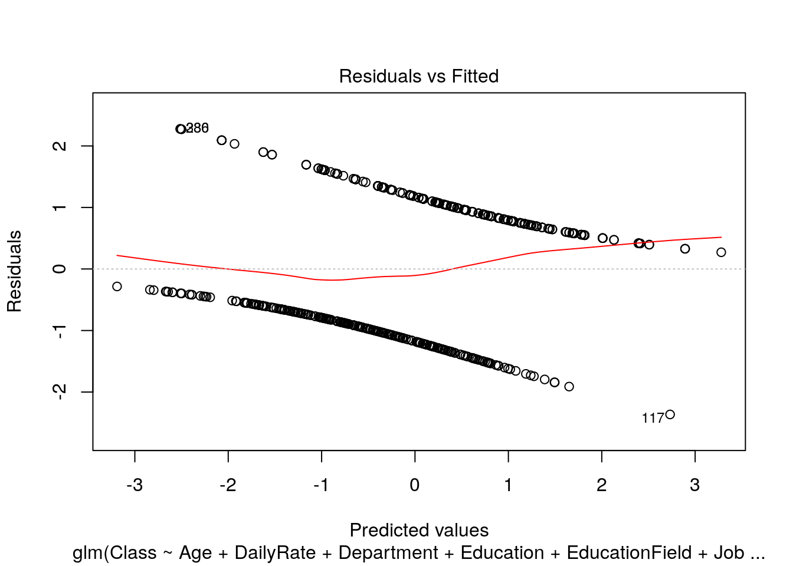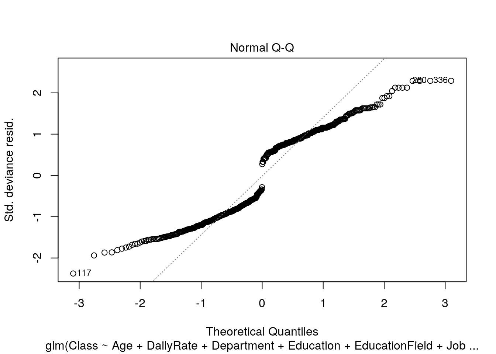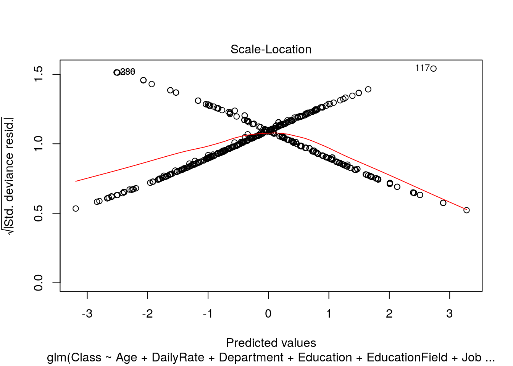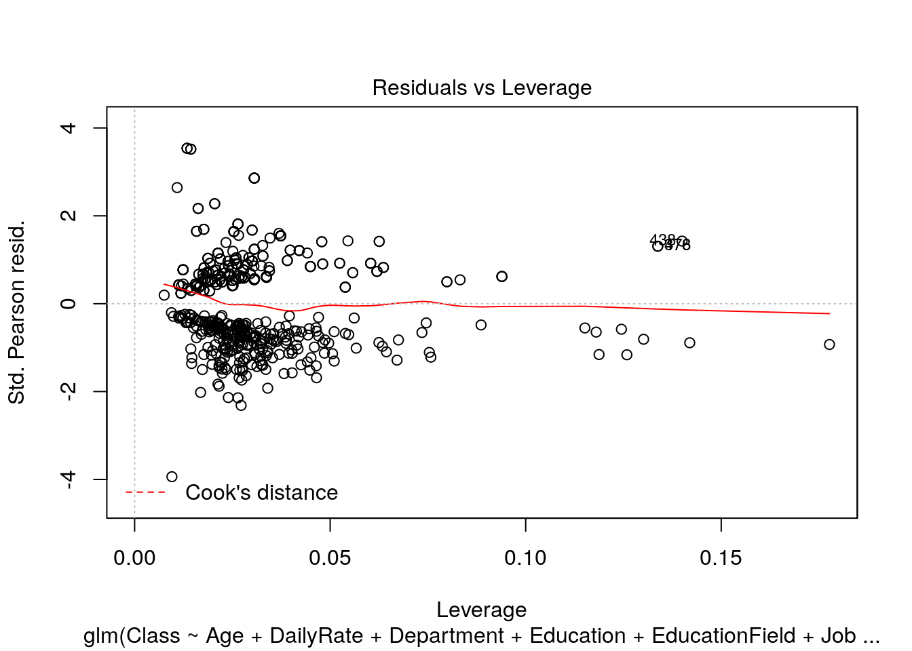
#making confusion matrix for how well model did in training
pred = main.logr_l_3$fitted.values
case_study2_sample_train['Pred_Out'] = as.factor(ifelse(pred>.50, "Yes", "No"))
Truth = case_study2_sample_train$Class
Predt = case_study2_sample_train$Pred_Out
confusionMatrix(table(Predt, Truth))## Confusion Matrix and Statistics
##
## Truth
## Predt No Yes
## No 173 70
## Yes 83 186
##
## Accuracy : 0.7012
## 95% CI : (0.6595, 0.7405)
## No Information Rate : 0.5
## P-Value [Acc > NIR] : <2e-16
##
## Kappa : 0.4023
##
## Mcnemar's Test P-Value : 0.332
##
## Sensitivity : 0.6758
## Specificity : 0.7266
## Pos Pred Value : 0.7119
## Neg Pred Value : 0.6914
## Prevalence : 0.5000
## Detection Rate : 0.3379
## Detection Prevalence : 0.4746
## Balanced Accuracy : 0.7012
##
## 'Positive' Class : No
## #testing model on independent test split
pred = predict(main.logr_l_3, newdata = case_study2_sample_test, type="response")
case_study2_sample_test['Pred_Out'] = as.factor(ifelse(pred>.50, "Yes", "No"))
Truth = case_study2_sample_test$Class
Predt = case_study2_sample_test$Pred_Out
confusionMatrix(table(Predt, Truth))## Confusion Matrix and Statistics
##
## Truth
## Predt No Yes
## No 318 152
## Yes 156 322
##
## Accuracy : 0.6751
## 95% CI : (0.6443, 0.7049)
## No Information Rate : 0.5
## P-Value [Acc > NIR] : <2e-16
##
## Kappa : 0.3502
##
## Mcnemar's Test P-Value : 0.8643
##
## Sensitivity : 0.6709
## Specificity : 0.6793
## Pos Pred Value : 0.6766
## Neg Pred Value : 0.6736
## Prevalence : 0.5000
## Detection Rate : 0.3354
## Detection Prevalence : 0.4958
## Balanced Accuracy : 0.6751
##
## 'Positive' Class : No
## Recommended Logistic Regression Model As confirmed by the EDA, we see Job Role, Job Level and Distance from Home are statistically significant in predicting attrition pvalue < 0.05
#Repeating same steps as from above with more predictors and complexity
main.logr_l_4 = glm(Class ~ Age + DailyRate + Department + Education +
EducationField + JobLevel + JobSatisfaction + MaritalStatus +
YearsInCurrentRole + OverTime + JobRole + JobInvolvement +
YearsSinceLastPromotion + EnvironmentSatisfaction + DistanceFromHome +
NumCompaniesWorked + WorkLifeBalance + PerformanceRating +
HourlyRate + TotalWorkingYears + YearsAtCompany + MonthlyIncome +
BusinessTravel + YearsWithCurrManager + RelationshipSatisfaction +
PercentSalaryHike + EmployeeNumber, data=case_study2_sample_train ,family=binomial(link='logit') )
step(main.logr_l_4,
scope = list(upper=main.logr),
direction="forward",
test="Chisq",
data=case_study2_sample_train)## Start: AIC=467.02
## Class ~ Age + DailyRate + Department + Education + EducationField +
## JobLevel + JobSatisfaction + MaritalStatus + YearsInCurrentRole +
## OverTime + JobRole + JobInvolvement + YearsSinceLastPromotion +
## EnvironmentSatisfaction + DistanceFromHome + NumCompaniesWorked +
## WorkLifeBalance + PerformanceRating + HourlyRate + TotalWorkingYears +
## YearsAtCompany + MonthlyIncome + BusinessTravel + YearsWithCurrManager +
## RelationshipSatisfaction + PercentSalaryHike + EmployeeNumber
##
## Df Deviance AIC LRT Pr(>Chi)
## + TrainingTimesLastYear 1 362.08 448.08 20.9435 4.73e-06 ***
## + MonthlyRate 1 380.02 466.02 3.0014 0.08319 .
## + StockOptionLevel 1 380.29 466.29 2.7364 0.09809 .
## + Gender 1 380.98 466.98 2.0442 0.15279
## <none> 383.02 467.02
## ---
## Signif. codes: 0 '***' 0.001 '**' 0.01 '*' 0.05 '.' 0.1 ' ' 1
##
## Step: AIC=448.08
## Class ~ Age + DailyRate + Department + Education + EducationField +
## JobLevel + JobSatisfaction + MaritalStatus + YearsInCurrentRole +
## OverTime + JobRole + JobInvolvement + YearsSinceLastPromotion +
## EnvironmentSatisfaction + DistanceFromHome + NumCompaniesWorked +
## WorkLifeBalance + PerformanceRating + HourlyRate + TotalWorkingYears +
## YearsAtCompany + MonthlyIncome + BusinessTravel + YearsWithCurrManager +
## RelationshipSatisfaction + PercentSalaryHike + EmployeeNumber +
## TrainingTimesLastYear
##
## Df Deviance AIC LRT Pr(>Chi)
## + Gender 1 358.08 446.08 4.0040 0.04539 *
## + MonthlyRate 1 358.57 446.57 3.5124 0.06091 .
## + StockOptionLevel 1 358.68 446.68 3.4009 0.06516 .
## <none> 362.08 448.08
## ---
## Signif. codes: 0 '***' 0.001 '**' 0.01 '*' 0.05 '.' 0.1 ' ' 1
##
## Step: AIC=446.08
## Class ~ Age + DailyRate + Department + Education + EducationField +
## JobLevel + JobSatisfaction + MaritalStatus + YearsInCurrentRole +
## OverTime + JobRole + JobInvolvement + YearsSinceLastPromotion +
## EnvironmentSatisfaction + DistanceFromHome + NumCompaniesWorked +
## WorkLifeBalance + PerformanceRating + HourlyRate + TotalWorkingYears +
## YearsAtCompany + MonthlyIncome + BusinessTravel + YearsWithCurrManager +
## RelationshipSatisfaction + PercentSalaryHike + EmployeeNumber +
## TrainingTimesLastYear + Gender
##
## Df Deviance AIC LRT Pr(>Chi)
## + StockOptionLevel 1 354.13 444.13 3.9491 0.04690 *
## + MonthlyRate 1 355.07 445.07 3.0115 0.08267 .
## <none> 358.08 446.08
## ---
## Signif. codes: 0 '***' 0.001 '**' 0.01 '*' 0.05 '.' 0.1 ' ' 1
##
## Step: AIC=444.13
## Class ~ Age + DailyRate + Department + Education + EducationField +
## JobLevel + JobSatisfaction + MaritalStatus + YearsInCurrentRole +
## OverTime + JobRole + JobInvolvement + YearsSinceLastPromotion +
## EnvironmentSatisfaction + DistanceFromHome + NumCompaniesWorked +
## WorkLifeBalance + PerformanceRating + HourlyRate + TotalWorkingYears +
## YearsAtCompany + MonthlyIncome + BusinessTravel + YearsWithCurrManager +
## RelationshipSatisfaction + PercentSalaryHike + EmployeeNumber +
## TrainingTimesLastYear + Gender + StockOptionLevel
##
## Df Deviance AIC LRT Pr(>Chi)
## <none> 354.13 444.13
## + MonthlyRate 1 352.25 444.25 1.8786 0.1705##
## Call: glm(formula = Class ~ Age + DailyRate + Department + Education +
## EducationField + JobLevel + JobSatisfaction + MaritalStatus +
## YearsInCurrentRole + OverTime + JobRole + JobInvolvement +
## YearsSinceLastPromotion + EnvironmentSatisfaction + DistanceFromHome +
## NumCompaniesWorked + WorkLifeBalance + PerformanceRating +
## HourlyRate + TotalWorkingYears + YearsAtCompany + MonthlyIncome +
## BusinessTravel + YearsWithCurrManager + RelationshipSatisfaction +
## PercentSalaryHike + EmployeeNumber + TrainingTimesLastYear +
## Gender + StockOptionLevel, family = binomial(link = "logit"),
## data = case_study2_sample_train)
##
## Coefficients:
## (Intercept)
## -9.231e+00
## Age
## -3.824e-02
## DailyRate
## -7.309e-04
## DepartmentResearch & Development
## 1.419e+01
## DepartmentSales
## 1.532e+01
## Education
## 7.411e-02
## EducationFieldLife Sciences
## -3.666e+00
## EducationFieldMarketing
## -4.614e+00
## EducationFieldMedical
## -3.671e+00
## EducationFieldOther
## -3.382e+00
## EducationFieldTechnical Degree
## -2.569e+00
## JobLevel
## 1.005e+00
## JobSatisfaction
## -6.863e-01
## MaritalStatusMarried
## 9.867e-01
## MaritalStatusSingle
## 2.025e+00
## YearsInCurrentRole
## -3.315e-01
## OverTimeYes
## 2.719e+00
## JobRoleHuman Resources
## 1.612e+01
## JobRoleLaboratory Technician
## 2.647e+00
## JobRoleManager
## 2.590e-01
## JobRoleManufacturing Director
## -3.703e-01
## JobRoleResearch Director
## 1.101e-01
## JobRoleResearch Scientist
## 1.731e+00
## JobRoleSales Executive
## 1.240e+00
## JobRoleSales Representative
## 3.435e+00
## JobInvolvement
## -7.281e-01
## YearsSinceLastPromotion
## 2.986e-01
## EnvironmentSatisfaction
## -3.402e-01
## DistanceFromHome
## 5.211e-02
## NumCompaniesWorked
## 3.190e-01
## WorkLifeBalance
## -7.206e-01
## PerformanceRating
## 8.637e-01
## HourlyRate
## 9.676e-03
## TotalWorkingYears
## -1.321e-01
## YearsAtCompany
## 1.664e-01
## MonthlyIncome
## -6.365e-05
## BusinessTravelTravel_Frequently
## 1.723e+00
## BusinessTravelTravel_Rarely
## 1.707e+00
## YearsWithCurrManager
## -2.121e-01
## RelationshipSatisfaction
## -2.991e-01
## PercentSalaryHike
## -7.092e-02
## EmployeeNumber
## -2.420e-04
## TrainingTimesLastYear
## -5.739e-01
## GenderMale
## -6.684e-01
## StockOptionLevel
## 4.174e-01
##
## Degrees of Freedom: 511 Total (i.e. Null); 467 Residual
## Null Deviance: 709.8
## Residual Deviance: 354.1 AIC: 444.1main.logr_l_4$aic## [1] 467.0248summary(main.logr_l_4)##
## Call:
## glm(formula = Class ~ Age + DailyRate + Department + Education +
## EducationField + JobLevel + JobSatisfaction + MaritalStatus +
## YearsInCurrentRole + OverTime + JobRole + JobInvolvement +
## YearsSinceLastPromotion + EnvironmentSatisfaction + DistanceFromHome +
## NumCompaniesWorked + WorkLifeBalance + PerformanceRating +
## HourlyRate + TotalWorkingYears + YearsAtCompany + MonthlyIncome +
## BusinessTravel + YearsWithCurrManager + RelationshipSatisfaction +
## PercentSalaryHike + EmployeeNumber, family = binomial(link = "logit"),
## data = case_study2_sample_train)
##
## Deviance Residuals:
## Min 1Q Median 3Q Max
## -2.5983 -0.5538 0.0311 0.5591 3.0470
##
## Coefficients:
## Estimate Std. Error z value
## (Intercept) -1.256e+01 6.991e+02 -0.018
## Age -3.741e-02 2.133e-02 -1.754
## DailyRate -6.042e-04 3.604e-04 -1.676
## DepartmentResearch & Development 1.401e+01 6.991e+02 0.020
## DepartmentSales 1.513e+01 6.991e+02 0.022
## Education 6.191e-02 1.470e-01 0.421
## EducationFieldLife Sciences -2.527e+00 1.491e+00 -1.695
## EducationFieldMarketing -2.960e+00 1.530e+00 -1.936
## EducationFieldMedical -2.642e+00 1.489e+00 -1.774
## EducationFieldOther -2.472e+00 1.533e+00 -1.612
## EducationFieldTechnical Degree -1.638e+00 1.480e+00 -1.107
## JobLevel 1.212e+00 5.161e-01 2.349
## JobSatisfaction -5.834e-01 1.267e-01 -4.603
## MaritalStatusMarried 9.307e-01 3.898e-01 2.388
## MaritalStatusSingle 1.491e+00 4.056e-01 3.677
## YearsInCurrentRole -2.524e-01 7.813e-02 -3.231
## OverTimeYes 2.504e+00 3.176e-01 7.882
## JobRoleHuman Resources 1.596e+01 6.991e+02 0.023
## JobRoleLaboratory Technician 2.346e+00 7.993e-01 2.935
## JobRoleManager 1.055e-01 1.307e+00 0.081
## JobRoleManufacturing Director -2.435e-01 8.489e-01 -0.287
## JobRoleResearch Director 5.786e-01 1.178e+00 0.491
## JobRoleResearch Scientist 1.915e+00 7.971e-01 2.402
## JobRoleSales Executive 8.045e-01 1.392e+00 0.578
## JobRoleSales Representative 2.998e+00 1.528e+00 1.961
## JobInvolvement -7.017e-01 1.955e-01 -3.589
## YearsSinceLastPromotion 2.922e-01 6.489e-02 4.504
## EnvironmentSatisfaction -3.289e-01 1.301e-01 -2.529
## DistanceFromHome 4.904e-02 1.693e-02 2.897
## NumCompaniesWorked 2.849e-01 6.631e-02 4.296
## WorkLifeBalance -6.693e-01 1.723e-01 -3.883
## PerformanceRating 8.378e-01 6.873e-01 1.219
## HourlyRate 9.104e-03 7.293e-03 1.248
## TotalWorkingYears -9.800e-02 5.022e-02 -1.952
## YearsAtCompany 1.058e-01 5.073e-02 2.085
## MonthlyIncome -1.229e-04 1.408e-04 -0.873
## BusinessTravelTravel_Frequently 1.650e+00 5.721e-01 2.884
## BusinessTravelTravel_Rarely 1.663e+00 5.061e-01 3.286
## YearsWithCurrManager -1.793e-01 6.763e-02 -2.651
## RelationshipSatisfaction -2.296e-01 1.280e-01 -1.793
## PercentSalaryHike -6.159e-02 6.170e-02 -0.998
## EmployeeNumber -7.467e-05 2.378e-04 -0.314
## Pr(>|z|)
## (Intercept) 0.985670
## Age 0.079427 .
## DailyRate 0.093662 .
## DepartmentResearch & Development 0.984015
## DepartmentSales 0.982732
## Education 0.673696
## EducationFieldLife Sciences 0.090032 .
## EducationFieldMarketing 0.052922 .
## EducationFieldMedical 0.076120 .
## EducationFieldOther 0.106917
## EducationFieldTechnical Degree 0.268474
## JobLevel 0.018838 *
## JobSatisfaction 4.16e-06 ***
## MaritalStatusMarried 0.016950 *
## MaritalStatusSingle 0.000236 ***
## YearsInCurrentRole 0.001235 **
## OverTimeYes 3.23e-15 ***
## JobRoleHuman Resources 0.981784
## JobRoleLaboratory Technician 0.003332 **
## JobRoleManager 0.935637
## JobRoleManufacturing Director 0.774194
## JobRoleResearch Director 0.623383
## JobRoleResearch Scientist 0.016297 *
## JobRoleSales Executive 0.563242
## JobRoleSales Representative 0.049838 *
## JobInvolvement 0.000332 ***
## YearsSinceLastPromotion 6.68e-06 ***
## EnvironmentSatisfaction 0.011455 *
## DistanceFromHome 0.003768 **
## NumCompaniesWorked 1.74e-05 ***
## WorkLifeBalance 0.000103 ***
## PerformanceRating 0.222859
## HourlyRate 0.211930
## TotalWorkingYears 0.050997 .
## YearsAtCompany 0.037094 *
## MonthlyIncome 0.382698
## BusinessTravelTravel_Frequently 0.003931 **
## BusinessTravelTravel_Rarely 0.001016 **
## YearsWithCurrManager 0.008035 **
## RelationshipSatisfaction 0.072957 .
## PercentSalaryHike 0.318160
## EmployeeNumber 0.753486
## ---
## Signif. codes: 0 '***' 0.001 '**' 0.01 '*' 0.05 '.' 0.1 ' ' 1
##
## (Dispersion parameter for binomial family taken to be 1)
##
## Null deviance: 709.78 on 511 degrees of freedom
## Residual deviance: 383.02 on 470 degrees of freedom
## AIC: 467.02
##
## Number of Fisher Scoring iterations: 14exp(cbind("Odds ratio" = coef(main.logr_l_4), confint.default(main.logr_l_4, level = 0.95)))## Odds ratio 2.5 %
## (Intercept) 3.521858e-06 0.000000000
## Age 9.632813e-01 0.923844038
## DailyRate 9.993960e-01 0.998690348
## DepartmentResearch & Development 1.210729e+06 0.000000000
## DepartmentSales 3.726553e+06 0.000000000
## Education 1.063864e+00 0.797521161
## EducationFieldLife Sciences 7.987671e-02 0.004299676
## EducationFieldMarketing 5.179604e-02 0.002584527
## EducationFieldMedical 7.124058e-02 0.003845429
## EducationFieldOther 8.445432e-02 0.004185165
## EducationFieldTechnical Degree 1.944032e-01 0.010687233
## JobLevel 3.361067e+00 1.222198615
## JobSatisfaction 5.580208e-01 0.435288184
## MaritalStatusMarried 2.536234e+00 1.181461991
## MaritalStatusSingle 4.442803e+00 2.006326068
## YearsInCurrentRole 7.769378e-01 0.666630400
## OverTimeYes 1.222537e+01 6.559763249
## JobRoleHuman Resources 8.553201e+06 0.000000000
## JobRoleLaboratory Technician 1.044516e+01 2.180593117
## JobRoleManager 1.111298e+00 0.085800240
## JobRoleManufacturing Director 7.838565e-01 0.148488919
## JobRoleResearch Director 1.783541e+00 0.177150321
## JobRoleResearch Scientist 6.785816e+00 1.422640161
## JobRoleSales Executive 2.235629e+00 0.146107842
## JobRoleSales Representative 2.004119e+01 1.002124000
## JobInvolvement 4.957622e-01 0.337968826
## YearsSinceLastPromotion 1.339429e+00 1.179465404
## EnvironmentSatisfaction 7.196927e-01 0.557719071
## DistanceFromHome 1.050260e+00 1.015987597
## NumCompaniesWorked 1.329569e+00 1.167533015
## WorkLifeBalance 5.120682e-01 0.365278299
## PerformanceRating 2.311186e+00 0.600932204
## HourlyRate 1.009145e+00 0.994823013
## TotalWorkingYears 9.066481e-01 0.821661616
## YearsAtCompany 1.111548e+00 1.006349092
## MonthlyIncome 9.998771e-01 0.999601135
## BusinessTravelTravel_Frequently 5.205114e+00 1.696250251
## BusinessTravelTravel_Rarely 5.275062e+00 1.956366760
## YearsWithCurrManager 8.358897e-01 0.732120627
## RelationshipSatisfaction 7.948551e-01 0.618439219
## PercentSalaryHike 9.402671e-01 0.833167989
## EmployeeNumber 9.999253e-01 0.999459444
## 97.5 %
## (Intercept) Inf
## Age 1.0044021
## DailyRate 1.0001022
## DepartmentResearch & Development Inf
## DepartmentSales Inf
## Education 1.4191550
## EducationFieldLife Sciences 1.4838999
## EducationFieldMarketing 1.0380352
## EducationFieldMedical 1.3198061
## EducationFieldOther 1.7042417
## EducationFieldTechnical Degree 3.5362367
## JobLevel 9.2429917
## JobSatisfaction 0.7153587
## MaritalStatusMarried 5.4445099
## MaritalStatusSingle 9.8381326
## YearsInCurrentRole 0.9054978
## OverTimeYes 22.7843266
## JobRoleHuman Resources Inf
## JobRoleLaboratory Technician 50.0329111
## JobRoleManager 14.3937074
## JobRoleManufacturing Director 4.1378909
## JobRoleResearch Director 17.9566012
## JobRoleResearch Scientist 32.3674918
## JobRoleSales Executive 34.2078536
## JobRoleSales Representative 400.7981499
## JobInvolvement 0.7272275
## YearsSinceLastPromotion 1.5210884
## EnvironmentSatisfaction 0.9287071
## DistanceFromHome 1.0856895
## NumCompaniesWorked 1.5140921
## WorkLifeBalance 0.7178468
## PerformanceRating 8.8888279
## HourlyRate 1.0236740
## TotalWorkingYears 1.0004250
## YearsAtCompany 1.2277438
## MonthlyIncome 1.0001531
## BusinessTravelTravel_Frequently 15.9724140
## BusinessTravelTravel_Rarely 14.2234484
## YearsWithCurrManager 0.9543667
## RelationshipSatisfaction 1.0215954
## PercentSalaryHike 1.0611333
## EmployeeNumber 1.0003914coefficients(main.logr_l_4)## (Intercept) Age
## -1.255652e+01 -3.740979e-02
## DailyRate DepartmentResearch & Development
## -6.041560e-04 1.400673e+01
## DepartmentSales Education
## 1.513099e+01 6.190735e-02
## EducationFieldLife Sciences EducationFieldMarketing
## -2.527271e+00 -2.960442e+00
## EducationFieldMedical EducationFieldOther
## -2.641693e+00 -2.471544e+00
## EducationFieldTechnical Degree JobLevel
## -1.637821e+00 1.212258e+00
## JobSatisfaction MaritalStatusMarried
## -5.833591e-01 9.306802e-01
## MaritalStatusSingle YearsInCurrentRole
## 1.491286e+00 -2.523950e-01
## OverTimeYes JobRoleHuman Resources
## 2.503514e+00 1.596182e+01
## JobRoleLaboratory Technician JobRoleManager
## 2.346139e+00 1.055288e-01
## JobRoleManufacturing Director JobRoleResearch Director
## -2.435294e-01 5.786006e-01
## JobRoleResearch Scientist JobRoleSales Executive
## 1.914834e+00 8.045225e-01
## JobRoleSales Representative JobInvolvement
## 2.997790e+00 -7.016588e-01
## YearsSinceLastPromotion EnvironmentSatisfaction
## 2.922437e-01 -3.289309e-01
## DistanceFromHome NumCompaniesWorked
## 4.903820e-02 2.848545e-01
## WorkLifeBalance PerformanceRating
## -6.692974e-01 8.377610e-01
## HourlyRate TotalWorkingYears
## 9.103840e-03 -9.800088e-02
## YearsAtCompany MonthlyIncome
## 1.057536e-01 -1.229319e-04
## BusinessTravelTravel_Frequently BusinessTravelTravel_Rarely
## 1.649642e+00 1.662990e+00
## YearsWithCurrManager RelationshipSatisfaction
## -1.792587e-01 -2.295954e-01
## PercentSalaryHike EmployeeNumber
## -6.159125e-02 -7.467208e-05#based on the goodness of fit test, we see this model is a good fit for the data
hoslem.test(main.logr_l_4$y, fitted(main.logr_l_4), g=10)##
## Hosmer and Lemeshow goodness of fit (GOF) test
##
## data: main.logr_l_4$y, fitted(main.logr_l_4)
## X-squared = 10.401, df = 8, p-value = 0.238plot(main.logr_l_4)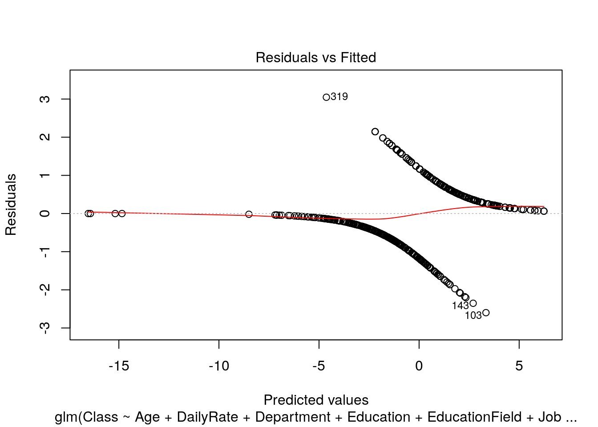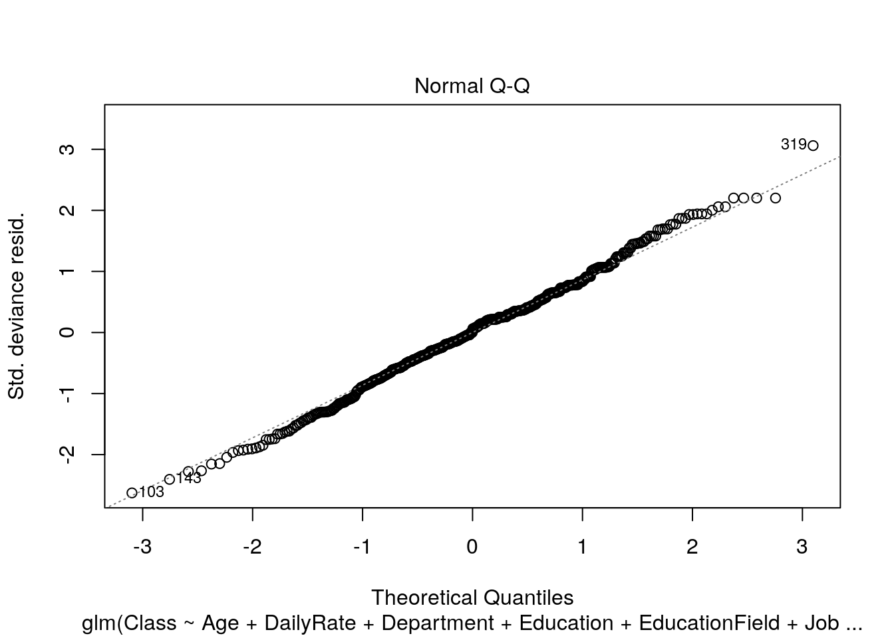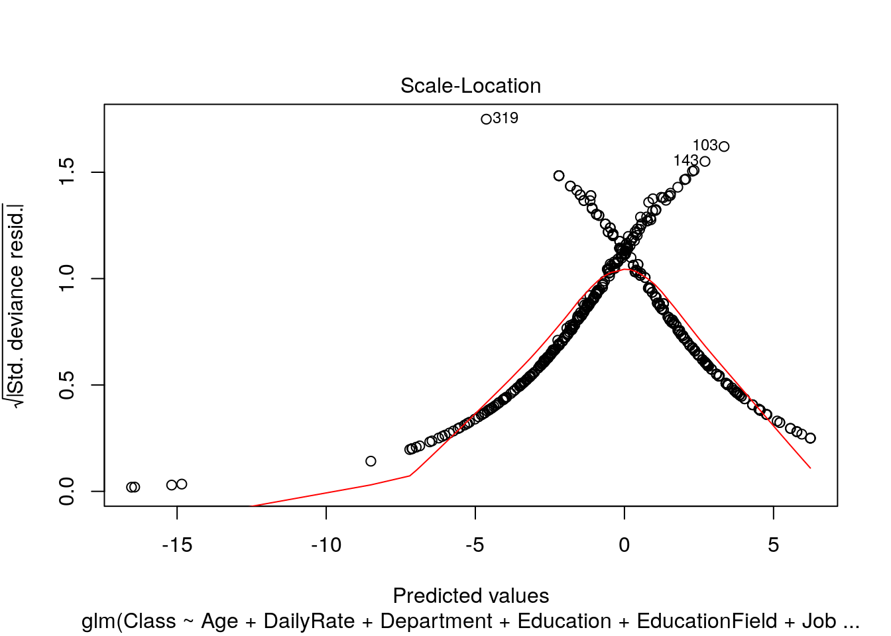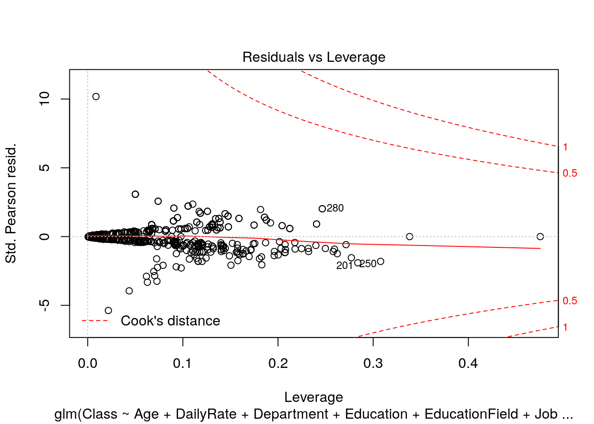
pred = main.logr_l_4$fitted.values
case_study2_sample_train['Pred_Out'] = as.factor(ifelse(pred>.50, "Yes", "No"))
Truth = case_study2_sample_train$Class
Predt = case_study2_sample_train$Pred_Out
confusionMatrix(table(Predt, Truth))## Confusion Matrix and Statistics
##
## Truth
## Predt No Yes
## No 207 44
## Yes 49 212
##
## Accuracy : 0.8184
## 95% CI : (0.7822, 0.8508)
## No Information Rate : 0.5
## P-Value [Acc > NIR] : <2e-16
##
## Kappa : 0.6367
##
## Mcnemar's Test P-Value : 0.6783
##
## Sensitivity : 0.8086
## Specificity : 0.8281
## Pos Pred Value : 0.8247
## Neg Pred Value : 0.8123
## Prevalence : 0.5000
## Detection Rate : 0.4043
## Detection Prevalence : 0.4902
## Balanced Accuracy : 0.8184
##
## 'Positive' Class : No
## pred = predict(main.logr_l_4, newdata = case_study2_sample_test, type="response")
case_study2_sample_test['Pred_Out'] = as.factor(ifelse(pred>.50, "Yes", "No"))
Truth = case_study2_sample_test$Class
Predt = case_study2_sample_test$Pred_Out
confusionMatrix(table(Predt, Truth))## Confusion Matrix and Statistics
##
## Truth
## Predt No Yes
## No 368 101
## Yes 106 373
##
## Accuracy : 0.7816
## 95% CI : (0.754, 0.8076)
## No Information Rate : 0.5
## P-Value [Acc > NIR] : <2e-16
##
## Kappa : 0.5633
##
## Mcnemar's Test P-Value : 0.781
##
## Sensitivity : 0.7764
## Specificity : 0.7869
## Pos Pred Value : 0.7846
## Neg Pred Value : 0.7787
## Prevalence : 0.5000
## Detection Rate : 0.3882
## Detection Prevalence : 0.4947
## Balanced Accuracy : 0.7816
##
## 'Positive' Class : No
## case_study_att_pred = predict(main.logr_l_4, newdata = case_study_attrition_preds, type="response")
case_study_attrition_preds['Attrition'] = as.factor(ifelse(case_study_att_pred>.50, "Yes", "No"))
case_study_attrition_preds_out = case_study_attrition_preds[,c('ID','Attrition')]
head(case_study_attrition_preds_out)## ID Attrition
## 1 1171 No
## 2 1172 No
## 3 1173 No
## 4 1174 No
## 5 1175 No
## 6 1176 NoWe see from the mcnemar test pvalue = 0.003 < .05 the Logistic Regression is significantly different from the NB model, outperforming the NB model
#Constructing a performance metric comparison matrix for mcnemar testing to see if NB is different from the performance of the logistic regression model
performance_comp_mat = matrix(c(384,564, 469, 479), nrow = 2, dimnames = list("NB" = c("No", "Yes"), "LogR"= c("No", "Yes")))
mcnemar.test(performance_comp_mat)##
## McNemar's Chi-squared test with continuity correction
##
## data: performance_comp_mat
## McNemar's chi-squared = 8.5537, df = 1, p-value = 0.003448